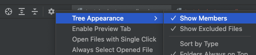
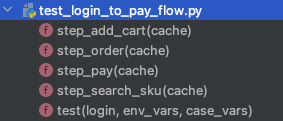

<!DOCTYPE html>
<html class="writer-html5" lang="en" >
<head>
  <meta charset="utf-8">
  
  <meta name="viewport" content="width=device-width, initial-scale=1.0">
  
  <title>tep1.0.0正式版发布且将不再维护 &mdash; 测试开发刚哥 latest documentation</title>
  

  
  <link rel="stylesheet" href="../_static/css/theme.css" type="text/css" />
  <link rel="stylesheet" href="../_static/pygments.css" type="text/css" />

  
  
    <link rel="shortcut icon" href="../_static/favicon.ico"/>
  
  
  

  
  <!--[if lt IE 9]>
    <script src="../_static/js/html5shiv.min.js"></script>
  <![endif]-->
  
    
      <script type="text/javascript" id="documentation_options" data-url_root="../" src="../_static/documentation_options.js"></script>
        <script src="../_static/jquery.js"></script>
        <script src="../_static/underscore.js"></script>
        <script src="../_static/doctools.js"></script>
        <script src="../_static/js/readmore.js"></script>
        <script src="../_static/js/baidutongji.js"></script>
    
    <script type="text/javascript" src="../_static/js/theme.js"></script>

    
    <link rel="index" title="Index" href="../genindex.html" />
    <link rel="search" title="Search" href="../search.html" />
    <link rel="next" title="测试平台" href="../chapters/%E6%B5%8B%E8%AF%95%E5%B9%B3%E5%8F%B0.html" />
    <link rel="prev" title="当Pytest遇上MVC分层设计自动化用例就该这么写" href="015-%E5%BD%93Pytest%E9%81%87%E4%B8%8AMVC%E5%88%86%E5%B1%82%E8%AE%BE%E8%AE%A1%E8%87%AA%E5%8A%A8%E5%8C%96%E7%94%A8%E4%BE%8B%E5%B0%B1%E8%AF%A5%E8%BF%99%E4%B9%88%E5%86%99.html" /> 
</head>

<body class="wy-body-for-nav">

   
  <div class="wy-grid-for-nav">
    
    <nav data-toggle="wy-nav-shift" class="wy-nav-side">
      <div class="wy-side-scroll">
        <div class="wy-side-nav-search" >
          

          
            <a href="../index.html" class="icon icon-home" alt="Documentation Home"> 测试开发刚哥
          

          
          </a>

          
            
            
              <div class="version">
                latest
              </div>
            
          

          
<div role="search">
  <form id="rtd-search-form" class="wy-form" action="../search.html" method="get">
    <input type="text" name="q" placeholder="Search docs" />
    <input type="hidden" name="check_keywords" value="yes" />
    <input type="hidden" name="area" value="default" />
  </form>
</div>

          
        </div>

        
        <div class="wy-menu wy-menu-vertical" data-spy="affix" role="navigation" aria-label="main navigation">
          
            
            
              
            
            
              <ul class="current">
<li class="toctree-l1"><a class="reference internal" href="../tep.html">tep</a></li>
<li class="toctree-l1"><a class="reference internal" href="../chapters/%E6%B5%8B%E8%AF%95%E4%BD%93%E7%B3%BB.html">测试体系</a></li>
<li class="toctree-l1"><a class="reference internal" href="../chapters/%E7%94%A8%E4%BE%8B%E8%AE%BE%E8%AE%A1.html">用例设计</a></li>
<li class="toctree-l1"><a class="reference internal" href="../chapters/%E7%BC%96%E7%A8%8B%E8%AF%AD%E8%A8%80.html">编程语言</a></li>
<li class="toctree-l1"><a class="reference internal" href="../chapters/%E6%8E%A5%E5%8F%A3%E6%B5%8B%E8%AF%95.html">接口自动</a></li>
<li class="toctree-l1"><a class="reference internal" href="../chapters/%E7%99%BD%E7%9B%92%E6%B5%8B%E8%AF%95.html">白盒测试</a></li>
<li class="toctree-l1"><a class="reference internal" href="../chapters/%E5%8D%95%E5%85%83%E6%B5%8B%E8%AF%95.html">单元测试</a></li>
<li class="toctree-l1"><a class="reference internal" href="../chapters/%E7%B2%BE%E5%87%86%E6%B5%8B%E8%AF%95.html">精准测试</a></li>
<li class="toctree-l1"><a class="reference internal" href="../chapters/%E6%B5%8B%E8%AF%95%E7%8E%AF%E5%A2%83.html">测试环境</a></li>
<li class="toctree-l1"><a class="reference internal" href="../chapters/%E6%B5%8B%E8%AF%95%E6%A1%86%E6%9E%B6.html">测试框架</a></li>
<li class="toctree-l1 current"><a class="reference internal" href="../chapters/%E6%B5%8B%E8%AF%95%E5%B7%A5%E5%85%B7.html">测试工具</a><ul class="current">
<li class="toctree-l2"><a class="reference internal" href="000-%E3%80%90%E6%9C%80%E6%96%B0%E3%80%91tep%E5%AE%8C%E6%95%B4%E6%95%99%E7%A8%8B%E5%B8%AE%E4%BD%A0%E7%AA%81%E7%A0%B4pytest.html">【最新】tep完整教程帮你突破pytest</a></li>
<li class="toctree-l2"><a class="reference internal" href="001-tep%E9%A6%96%E6%AC%A1%E5%BC%80%E6%BA%90V0.2.3%E4%BB%8B%E7%BB%8D.html">tep首次开源V0.2.3介绍</a></li>
<li class="toctree-l2"><a class="reference internal" href="002-tep%E7%94%A8%E6%88%B7%E6%89%8B%E5%86%8C%E5%B8%AE%E4%BD%A0%E4%BB%8Eunittest%E8%BF%87%E6%B8%A1%E5%88%B0pytest.html">tep用户手册帮你从unittest过渡到pytest</a></li>
<li class="toctree-l2"><a class="reference internal" href="003-%E5%A6%82%E4%BD%95%E7%94%A8tep%E5%AE%8C%E6%88%90%E5%A2%9E%E5%88%A0%E6%94%B9%E6%9F%A5%E6%8E%A5%E5%8F%A3%E8%87%AA%E5%8A%A8%E5%8C%96.html">如何用tep完成增删改查接口自动化</a></li>
<li class="toctree-l2"><a class="reference internal" href="004-tep0.6.0%E6%9B%B4%E6%96%B0%E8%81%8A%E8%81%8Apytest%E5%8F%98%E9%87%8F%E6%8E%A5%E5%8F%A3%E7%94%A8%E4%BE%8B3%E4%B8%AA%E7%BA%A7%E5%88%AB%E5%A4%8D%E7%94%A8.html">tep0.6.0更新聊聊pytest变量接口用例3个级别复用</a></li>
<li class="toctree-l2"><a class="reference internal" href="005-tep%E7%8E%AF%E5%A2%83%E5%8F%98%E9%87%8F%E3%80%81fixtures%E3%80%81%E7%94%A8%E4%BE%8B%E4%B8%89%E8%80%85%E4%B9%8B%E9%97%B4%E7%9A%84%E5%85%B3%E7%B3%BB.html">tep环境变量、fixtures、用例三者之间的关系</a></li>
<li class="toctree-l2"><a class="reference internal" href="006-%E5%8E%9F%E5%88%9Bpytest%E8%BE%85%E5%8A%A9%E5%B7%A5%E5%85%B7tep0.9.1%E7%89%88%E6%9C%AC%E6%81%A2%E5%A4%8D%E9%A1%B9%E7%9B%AE%E5%88%9D%E5%A7%8B%E5%8C%96%E6%96%87%E4%BB%B6.html">原创pytest辅助工具tep0.9.1版本恢复项目初始化文件</a></li>
<li class="toctree-l2"><a class="reference internal" href="007-tep%E9%9B%86%E6%88%90HttpRunner%E4%B8%8EFlask%E5%AE%9E%E7%8E%B0%E5%BC%80%E7%AE%B1%E5%8D%B3%E7%94%A8.html">tep集成HttpRunner与Flask实现开箱即用</a></li>
<li class="toctree-l2"><a class="reference internal" href="008-tep%E6%94%AF%E6%8C%81MVC%E6%9E%B6%E6%9E%84%E5%AE%9E%E7%8E%B0%E7%94%A8%E4%BE%8B%E6%95%B0%E6%8D%AE%E5%88%86%E7%A6%BB.html">tep支持MVC架构实现用例数据分离</a></li>
<li class="toctree-l2"><a class="reference internal" href="009-tep0.9.5%E6%94%AF%E6%8C%81%E8%87%AA%E5%AE%9A%E4%B9%89%E6%89%A9%E5%B1%95request.html">tep0.9.5支持自定义扩展request</a></li>
<li class="toctree-l2"><a class="reference internal" href="010-tep%E9%9B%86%E6%88%90mitmproxy%E5%BD%95%E5%88%B6%E6%B5%81%E9%87%8F%E8%87%AA%E5%8A%A8%E7%94%9F%E6%88%90%E7%94%A8%E4%BE%8B.html">tep集成mitmproxy录制流量自动生成用例</a></li>
<li class="toctree-l2"><a class="reference internal" href="011-%E6%B0%91%E9%97%B4%E6%B5%81%E8%BD%AC%E7%9A%84pytest%E9%A1%B9%E7%9B%AE%E7%BB%93%E6%9E%84%E8%AE%BE%E8%AE%A1.html">民间流转的pytest项目结构设计</a></li>
<li class="toctree-l2"><a class="reference internal" href="012-%E6%8E%A5%E5%8F%A3%E8%87%AA%E5%8A%A8%E5%8C%96%E9%A1%B9%E7%9B%AE%E8%90%BD%E5%9C%B0%E4%B9%8BHTTPBin%E7%BD%91%E7%AB%99.html">接口自动化项目落地之HTTPBin网站</a></li>
<li class="toctree-l2"><a class="reference internal" href="013-tep%E6%97%B6%E9%9A%948%E4%B8%AA%E6%9C%88%E8%BF%8E%E6%9D%A5%E9%87%8D%E5%A4%A7%E5%85%A8%E6%96%B0%E5%8D%87%E7%BA%A7.html">tep时隔8个月迎来重大全新升级</a></li>
<li class="toctree-l2"><a class="reference internal" href="014-tep%E6%94%AF%E6%8C%81pytest-xdist%E5%88%86%E5%B8%83%E5%BC%8F%E6%89%A7%E8%A1%8C%E7%94%A8%E4%BE%8B%E5%8F%8A%E5%90%88%E5%B9%B6Allure%E6%8A%A5%E5%91%8A.html">tep支持pytestxdist分布式执行用例及合并Allure报告</a></li>
<li class="toctree-l2"><a class="reference internal" href="015-%E5%BD%93Pytest%E9%81%87%E4%B8%8AMVC%E5%88%86%E5%B1%82%E8%AE%BE%E8%AE%A1%E8%87%AA%E5%8A%A8%E5%8C%96%E7%94%A8%E4%BE%8B%E5%B0%B1%E8%AF%A5%E8%BF%99%E4%B9%88%E5%86%99.html">当Pytest遇上MVC分层设计自动化用例就该这么写</a></li>
<li class="toctree-l2 current"><a class="current reference internal" href="#">tep1.0.0正式版发布且将不再维护</a><ul>
<li class="toctree-l3"><a class="reference internal" href="#id1">写在前面</a></li>
<li class="toctree-l3"><a class="reference internal" href="#tep">tep简介</a></li>
<li class="toctree-l3"><a class="reference internal" href="#id2">快速入门</a><ul>
<li class="toctree-l4"><a class="reference internal" href="#id3">安装</a></li>
<li class="toctree-l4"><a class="reference internal" href="#id4">新建项目</a></li>
<li class="toctree-l4"><a class="reference internal" href="#fastapi">启动FastAPI示例应用</a></li>
<li class="toctree-l4"><a class="reference internal" href="#id5">执行示例用例</a></li>
<li class="toctree-l4"><a class="reference internal" href="#id6">查看日志</a></li>
</ul>
</li>
<li class="toctree-l3"><a class="reference internal" href="#id7">目录结构说明</a></li>
<li class="toctree-l3"><a class="reference internal" href="#id8">用例组织形式</a><ul>
<li class="toctree-l4"><a class="reference internal" href="#id9">用例集</a></li>
<li class="toctree-l4"><a class="reference internal" href="#id10">测试用例</a></li>
<li class="toctree-l4"><a class="reference internal" href="#id11">测试数据</a></li>
<li class="toctree-l4"><a class="reference internal" href="#id12">测试标题</a></li>
<li class="toctree-l4"><a class="reference internal" href="#id13">测试步骤</a></li>
</ul>
</li>
<li class="toctree-l3"><a class="reference internal" href="#id14">变量</a></li>
<li class="toctree-l3"><a class="reference internal" href="#id15">接口关联</a></li>
<li class="toctree-l3"><a class="reference internal" href="#id16">数据提取</a></li>
<li class="toctree-l3"><a class="reference internal" href="#id17">断言</a></li>
<li class="toctree-l3"><a class="reference internal" href="#id18">测试报告</a></li>
<li class="toctree-l3"><a class="reference internal" href="#id19">用例执行</a><ul>
<li class="toctree-l4"><a class="reference internal" href="#id20">串行</a></li>
<li class="toctree-l4"><a class="reference internal" href="#id21">并行</a></li>
</ul>
</li>
<li class="toctree-l3"><a class="reference internal" href="#id22">特色功能</a><ul>
<li class="toctree-l4"><a class="reference internal" href="#fixtures">fixtures自动导入</a></li>
<li class="toctree-l4"><a class="reference internal" href="#id23">全局执行一次登录</a></li>
</ul>
</li>
<li class="toctree-l3"><a class="reference internal" href="#id24">工具包</a></li>
<li class="toctree-l3"><a class="reference internal" href="#id25">结束与开始</a></li>
</ul>
</li>
</ul>
</li>
<li class="toctree-l1"><a class="reference internal" href="../chapters/%E6%B5%8B%E8%AF%95%E5%B9%B3%E5%8F%B0.html">测试平台</a></li>
<li class="toctree-l1"><a class="reference internal" href="../chapters/%E6%B5%8B%E8%AF%95%E6%8A%A5%E5%91%8A.html">测试报告</a></li>
<li class="toctree-l1"><a class="reference internal" href="../chapters/%E6%B5%81%E9%87%8F%E5%9B%9E%E6%94%BE.html">流量回放</a></li>
<li class="toctree-l1"><a class="reference internal" href="../chapters/%E6%80%A7%E8%83%BD%E6%B5%8B%E8%AF%95.html">性能测试</a></li>
<li class="toctree-l1"><a class="reference internal" href="../chapters/%E5%BC%80%E5%8F%91%E6%A1%86%E6%9E%B6.html">开发框架</a></li>
<li class="toctree-l1"><a class="reference internal" href="../chapters/%E4%B8%AD%E9%97%B4%E8%BD%AF%E4%BB%B6.html">中间软件</a></li>
<li class="toctree-l1"><a class="reference internal" href="../chapters/%E9%80%9A%E7%94%A8%E6%8A%80%E6%9C%AF.html">通用技术</a></li>
<li class="toctree-l1"><a class="reference internal" href="../chapters/%E7%9F%A5%E8%AF%86%E8%83%BD%E5%8A%9B.html">知识能力</a></li>
<li class="toctree-l1"><a class="reference internal" href="../chapters/%E8%AF%BB%E4%B9%A6%E7%AC%94%E8%AE%B0.html">读书笔记</a></li>
<li class="toctree-l1"><a class="reference internal" href="../chapters/%E9%9D%A2%E8%AF%95%E5%A4%87%E6%88%98.html">面试备战</a></li>
<li class="toctree-l1"><a class="reference internal" href="../chapters/%E6%80%BB%E7%BB%93%E6%84%9F%E6%83%B3.html">总结感想</a></li>
<li class="toctree-l1"><a class="reference internal" href="../%E7%BD%91%E7%AB%99%E6%8E%A8%E8%8D%90.html">网站推荐</a></li>
<li class="toctree-l1"><a class="reference internal" href="../%E8%87%AA%E6%88%91%E4%BB%8B%E7%BB%8D.html">自我介绍</a></li>
</ul>

            
          
        </div>
        
      </div>
    </nav>

    <section data-toggle="wy-nav-shift" class="wy-nav-content-wrap">

      
      <nav class="wy-nav-top" aria-label="top navigation">
        
          <i data-toggle="wy-nav-top" class="fa fa-bars"></i>
          <a href="../index.html">测试开发刚哥</a>
        
      </nav>


      <div class="wy-nav-content">
        
        <div class="rst-content">
        
          


<div role="navigation" aria-label="breadcrumbs navigation">

  <ul class="wy-breadcrumbs">
    
      <li><a href="../index.html" class="icon icon-home"></a> &raquo;</li>
        
          <li><a href="../chapters/%E6%B5%8B%E8%AF%95%E5%B7%A5%E5%85%B7.html">测试工具</a> &raquo;</li>
        
      <li>tep1.0.0正式版发布且将不再维护</li>
    
    
      <li class="wy-breadcrumbs-aside">
        
            
            <a href="../_sources/测试工具/016-tep1.0.0正式版发布且将不再维护.rst.txt" rel="nofollow"> View page source</a>
          
        
      </li>
    
  </ul>

  
  <hr/>
</div>
          <div role="main" class="document" itemscope="itemscope" itemtype="http://schema.org/Article">
           <div itemprop="articleBody">
            
  <div class="section" id="tep1-0-0">
<h1>tep1.0.0正式版发布且将不再维护<a class="headerlink" href="#tep1-0-0" title="Permalink to this headline">¶</a></h1>
<p></p>
<div class="section" id="id1">
<h2>写在前面<a class="headerlink" href="#id1" title="Permalink to this headline">¶</a></h2>
<p>根据pypistats统计，tep在pypi的下载量达到了<strong>1w</strong>，对于纯个人研发的一款测试小工具来说，已经算不错了，要知道HttpRunner也才6w啊。tep可以说是我在接口自动化测试这个领域的技术沉淀，凝结了个人经验和所见所闻的精华之作，它基于Pytest，借鉴了JMeter、RobotFramework、HttpRunner、京东接口测试平台等各种优秀自动化设计思想，小小工具，蕴含大大能量。相信它也已经影响了不少人，让初学者知道Pytest该怎么玩，让入门者知道Pytest工程化是什么样子，让熟练者可以参考对照优化代码。<strong>然而当我把tep优化到1.0.0正式版以后，为什么却选择停止维护呢？</strong>
一、
小工具的表达力不够。当我试图用tep来描绘更多自动化设计思想时，瞬间感觉到了一丝苍白，我不一定讲的清楚，别人也不一定能够理解，用代码来交流始终存在着一定门槛。二、每个人对Pytest使用方式不同
。Pytest本身是测试框架，很多人用它来做二次开发，设计”测试框架“，有好的，有差的，不管白猫黑猫能逮到耗子就是好猫，不管设计的如何，能实现接口自动化项目落地就是好框架。tep要想在这个方向上，建立一套标准，几乎是不可能的。<strong>这不并意味我会就此放弃Pytest，相反，我将致力于Pytest平台化，从做小工具改为做测试平台。</strong>
测试平台具有非常直观的强大表现力，并且具有工程化的规范性，一看就懂，一用就会，一点就通。测试平台也是能更好的做技术沉淀的，如果说写小工具是玩玩而已，那么开发测试平台就是认真搞技术了。比如，如何提高Pytest并行执行的效率，我相信测试平台会比小工具，更能给出一个比较完整的解决方案。下次使用Pytest，也许就不是从<code class="docutils literal notranslate"><span class="pre">tep</span> <span class="pre">startproject</span></code>开始了，而是<code class="docutils literal notranslate"><span class="pre">docker</span> <span class="pre">run</span></code>。</p>
<p><strong>作为归档，我也把tep1.0.0正式版的完整教程放在这篇文章了，欢迎大家阅读。</strong></p>
<p>正式版教程： <a class="reference external" href="https://dongfanger.gitee.io/blog/tep.html">https://dongfanger.gitee.io/blog/tep.html</a></p>
<p>正式版源码： <a class="reference external" href="https://github.com/dongfanger/tep">https://github.com/dongfanger/tep</a></p>
</div>
<div class="section" id="tep">
<h2>tep简介<a class="headerlink" href="#tep" title="Permalink to this headline">¶</a></h2>
<p><code class="docutils literal notranslate"><span class="pre">tep</span></code>是<strong>T</strong>ry <strong>E</strong>asy <strong>P</strong>ytest的首字母缩写，是一款基于pytest测试框架的测试工具，集成了各种实用的第三方包和优秀的自动化测试设计思想，帮你快速实现自动化项目落地。</p>
</div>
<div class="section" id="id2">
<h2>快速入门<a class="headerlink" href="#id2" title="Permalink to this headline">¶</a></h2>
<div class="section" id="id3">
<h3>安装<a class="headerlink" href="#id3" title="Permalink to this headline">¶</a></h3>
<div class="highlight-shell notranslate"><div class="highlight"><pre><span></span>pip install tep
</pre></div>
</div>
<p>Mac用户建议创建虚拟环境并激活：</p>
<div class="highlight-shell notranslate"><div class="highlight"><pre><span></span>python3 -m venv venv
<span class="nb">source</span> venv/bin/activate
</pre></div>
</div>
<p>验证安装成功：</p>
<div class="highlight-shell notranslate"><div class="highlight"><pre><span></span>tep -V
</pre></div>
</div>
</div>
<div class="section" id="id4">
<h3>新建项目<a class="headerlink" href="#id4" title="Permalink to this headline">¶</a></h3>
<div class="highlight-shell notranslate"><div class="highlight"><pre><span></span>tep startproject demo
</pre></div>
</div>
<p>带上<code class="docutils literal notranslate"><span class="pre">-venv</span></code>参数，可创建单个项目的Python虚拟环境，并在该项目的虚拟环境中安装tep：</p>
<div class="highlight-shell notranslate"><div class="highlight"><pre><span></span>tep startproject demo -venv
</pre></div>
</div>
</div>
<div class="section" id="fastapi">
<h3>启动FastAPI示例应用<a class="headerlink" href="#fastapi" title="Permalink to this headline">¶</a></h3>
<p>运行<code class="docutils literal notranslate"><span class="pre">utils/fastapi_mock.py</span></code>脚本。</p>
</div>
<div class="section" id="id5">
<h3>执行示例用例<a class="headerlink" href="#id5" title="Permalink to this headline">¶</a></h3>
<p>执行<code class="docutils literal notranslate"><span class="pre">examples/tests/test_login_to_pay_flow.py</span></code>用例。</p>
</div>
<div class="section" id="id6">
<h3>查看日志<a class="headerlink" href="#id6" title="Permalink to this headline">¶</a></h3>
<div class="highlight-default notranslate"><div class="highlight"><pre><span></span><span class="o">=============================</span> <span class="n">test</span> <span class="n">session</span> <span class="n">starts</span> <span class="o">==============================</span>
<span class="n">collecting</span> <span class="o">...</span> <span class="n">collected</span> <span class="mi">1</span> <span class="n">item</span>

<span class="n">test_login_to_pay_flow</span><span class="o">.</span><span class="n">py</span><span class="p">::</span><span class="n">test</span>

<span class="o">==============================</span> <span class="mi">1</span> <span class="n">passed</span> <span class="ow">in</span> <span class="mf">0.14</span><span class="n">s</span> <span class="o">===============================</span>

<span class="n">Process</span> <span class="n">finished</span> <span class="k">with</span> <span class="n">exit</span> <span class="n">code</span> <span class="mi">0</span>
<span class="mi">2022</span><span class="o">-</span><span class="mi">12</span><span class="o">-</span><span class="mi">27</span> <span class="mi">15</span><span class="p">:</span><span class="mi">19</span><span class="p">:</span><span class="mf">37.223</span> <span class="o">|</span> <span class="n">INFO</span>     <span class="o">|</span> <span class="n">fixtures</span><span class="o">.</span><span class="n">fixture_login</span><span class="p">:</span><span class="n">produce_expensive_data</span><span class="p">:</span><span class="mi">15</span> <span class="o">-</span> <span class="o">----------------</span><span class="n">开始登录</span><span class="o">----------------</span>
<span class="mi">2022</span><span class="o">-</span><span class="mi">12</span><span class="o">-</span><span class="mi">27</span> <span class="mi">15</span><span class="p">:</span><span class="mi">19</span><span class="p">:</span><span class="mf">37.234</span> <span class="o">|</span> <span class="n">INFO</span>     <span class="o">|</span> <span class="n">utils</span><span class="o">.</span><span class="n">http_client</span><span class="p">:</span><span class="n">request</span><span class="p">:</span><span class="mi">37</span> <span class="o">-</span>

<span class="n">Request</span> <span class="n">URL</span><span class="p">:</span> <span class="n">http</span><span class="p">:</span><span class="o">//</span><span class="mf">127.0</span><span class="o">.</span><span class="mf">0.1</span><span class="p">:</span><span class="mi">5000</span><span class="o">/</span><span class="n">login</span>
<span class="n">Request</span> <span class="n">Method</span><span class="p">:</span> <span class="n">post</span>
<span class="n">Request</span> <span class="n">Headers</span><span class="p">:</span> <span class="p">{</span><span class="s2">&quot;Content-Type&quot;</span><span class="p">:</span> <span class="s2">&quot;application/json&quot;</span><span class="p">}</span>
<span class="n">Request</span> <span class="n">Payload</span><span class="p">:</span> <span class="p">{</span><span class="s2">&quot;json&quot;</span><span class="p">:</span> <span class="p">{</span><span class="s2">&quot;username&quot;</span><span class="p">:</span> <span class="s2">&quot;dongfanger&quot;</span><span class="p">,</span> <span class="s2">&quot;password&quot;</span><span class="p">:</span> <span class="s2">&quot;123456&quot;</span><span class="p">}}</span>
<span class="n">Status</span> <span class="n">Code</span><span class="p">:</span> <span class="mi">200</span>
<span class="n">Response</span><span class="p">:</span> <span class="p">{</span><span class="s2">&quot;token&quot;</span><span class="p">:</span><span class="s2">&quot;de2e3ffu29&quot;</span><span class="p">}</span>
<span class="n">Elapsed</span><span class="p">:</span> <span class="mf">0.003</span><span class="n">s</span>

<span class="mi">2022</span><span class="o">-</span><span class="mi">12</span><span class="o">-</span><span class="mi">27</span> <span class="mi">15</span><span class="p">:</span><span class="mi">19</span><span class="p">:</span><span class="mf">37.234</span> <span class="o">|</span> <span class="n">INFO</span>     <span class="o">|</span> <span class="n">fixtures</span><span class="o">.</span><span class="n">fixture_login</span><span class="p">:</span><span class="n">produce_expensive_data</span><span class="p">:</span><span class="mi">23</span> <span class="o">-</span> <span class="o">----------------</span><span class="n">登录成功</span><span class="o">----------------</span>
<span class="n">PASSED</span>                                   <span class="p">[</span><span class="mi">100</span><span class="o">%</span><span class="p">]</span><span class="mi">2022</span><span class="o">-</span><span class="mi">12</span><span class="o">-</span><span class="mi">27</span> <span class="mi">15</span><span class="p">:</span><span class="mi">19</span><span class="p">:</span><span class="mf">37.235</span> <span class="o">|</span> <span class="n">INFO</span>     <span class="o">|</span> <span class="n">utils</span><span class="o">.</span><span class="n">step</span><span class="p">:</span><span class="fm">__init__</span><span class="p">:</span><span class="mi">12</span> <span class="o">-</span> <span class="o">----------------</span><span class="n">搜索商品</span><span class="o">----------------</span>
<span class="mi">2022</span><span class="o">-</span><span class="mi">12</span><span class="o">-</span><span class="mi">27</span> <span class="mi">15</span><span class="p">:</span><span class="mi">19</span><span class="p">:</span><span class="mf">37.250</span> <span class="o">|</span> <span class="n">INFO</span>     <span class="o">|</span> <span class="n">utils</span><span class="o">.</span><span class="n">http_client</span><span class="p">:</span><span class="n">request</span><span class="p">:</span><span class="mi">37</span> <span class="o">-</span>

<span class="n">Request</span> <span class="n">URL</span><span class="p">:</span> <span class="n">http</span><span class="p">:</span><span class="o">//</span><span class="mf">127.0</span><span class="o">.</span><span class="mf">0.1</span><span class="p">:</span><span class="mi">5000</span><span class="o">/</span><span class="n">searchSku</span>
<span class="n">Request</span> <span class="n">Method</span><span class="p">:</span> <span class="n">get</span>
<span class="n">Request</span> <span class="n">Headers</span><span class="p">:</span> <span class="p">{</span><span class="s2">&quot;token&quot;</span><span class="p">:</span> <span class="s2">&quot;de2e3ffu29&quot;</span><span class="p">}</span>
<span class="n">Request</span> <span class="n">Payload</span><span class="p">:</span> <span class="p">{</span><span class="s2">&quot;params&quot;</span><span class="p">:</span> <span class="p">{</span><span class="s2">&quot;skuName&quot;</span><span class="p">:</span> <span class="s2">&quot;</span><span class="se">\u7535\u5b50\u4e66</span><span class="s2">&quot;</span><span class="p">}}</span>
<span class="n">Status</span> <span class="n">Code</span><span class="p">:</span> <span class="mi">200</span>
<span class="n">Response</span><span class="p">:</span> <span class="p">{</span><span class="s2">&quot;skuId&quot;</span><span class="p">:</span><span class="s2">&quot;222&quot;</span><span class="p">,</span><span class="s2">&quot;price&quot;</span><span class="p">:</span><span class="s2">&quot;2.3&quot;</span><span class="p">}</span>
<span class="n">Elapsed</span><span class="p">:</span> <span class="mf">0.001</span><span class="n">s</span>

<span class="mi">2022</span><span class="o">-</span><span class="mi">12</span><span class="o">-</span><span class="mi">27</span> <span class="mi">15</span><span class="p">:</span><span class="mi">19</span><span class="p">:</span><span class="mf">37.250</span> <span class="o">|</span> <span class="n">INFO</span>     <span class="o">|</span> <span class="n">utils</span><span class="o">.</span><span class="n">step</span><span class="p">:</span><span class="fm">__init__</span><span class="p">:</span><span class="mi">12</span> <span class="o">-</span> <span class="o">----------------</span><span class="n">添加购物车</span><span class="o">----------------</span>
<span class="mi">2022</span><span class="o">-</span><span class="mi">12</span><span class="o">-</span><span class="mi">27</span> <span class="mi">15</span><span class="p">:</span><span class="mi">19</span><span class="p">:</span><span class="mf">37.254</span> <span class="o">|</span> <span class="n">INFO</span>     <span class="o">|</span> <span class="n">utils</span><span class="o">.</span><span class="n">http_client</span><span class="p">:</span><span class="n">request</span><span class="p">:</span><span class="mi">37</span> <span class="o">-</span>

<span class="n">Request</span> <span class="n">URL</span><span class="p">:</span> <span class="n">http</span><span class="p">:</span><span class="o">//</span><span class="mf">127.0</span><span class="o">.</span><span class="mf">0.1</span><span class="p">:</span><span class="mi">5000</span><span class="o">/</span><span class="n">addCart</span>
<span class="n">Request</span> <span class="n">Method</span><span class="p">:</span> <span class="n">post</span>
<span class="n">Request</span> <span class="n">Headers</span><span class="p">:</span> <span class="p">{</span><span class="s2">&quot;token&quot;</span><span class="p">:</span> <span class="s2">&quot;de2e3ffu29&quot;</span><span class="p">}</span>
<span class="n">Request</span> <span class="n">Payload</span><span class="p">:</span> <span class="p">{</span><span class="s2">&quot;json&quot;</span><span class="p">:</span> <span class="p">{</span><span class="s2">&quot;skuId&quot;</span><span class="p">:</span> <span class="s2">&quot;222&quot;</span><span class="p">,</span> <span class="s2">&quot;skuNum&quot;</span><span class="p">:</span> <span class="mi">2</span><span class="p">}}</span>
<span class="n">Status</span> <span class="n">Code</span><span class="p">:</span> <span class="mi">200</span>
<span class="n">Response</span><span class="p">:</span> <span class="p">{</span><span class="s2">&quot;skuId&quot;</span><span class="p">:</span><span class="s2">&quot;222&quot;</span><span class="p">,</span><span class="s2">&quot;price&quot;</span><span class="p">:</span><span class="s2">&quot;2.3&quot;</span><span class="p">,</span><span class="s2">&quot;skuNum&quot;</span><span class="p">:</span><span class="s2">&quot;3&quot;</span><span class="p">,</span><span class="s2">&quot;totalPrice&quot;</span><span class="p">:</span><span class="s2">&quot;6.9&quot;</span><span class="p">}</span>
<span class="n">Elapsed</span><span class="p">:</span> <span class="mf">0.001</span><span class="n">s</span>

<span class="mi">2022</span><span class="o">-</span><span class="mi">12</span><span class="o">-</span><span class="mi">27</span> <span class="mi">15</span><span class="p">:</span><span class="mi">19</span><span class="p">:</span><span class="mf">37.254</span> <span class="o">|</span> <span class="n">INFO</span>     <span class="o">|</span> <span class="n">utils</span><span class="o">.</span><span class="n">step</span><span class="p">:</span><span class="fm">__init__</span><span class="p">:</span><span class="mi">12</span> <span class="o">-</span> <span class="o">----------------</span><span class="n">下单</span><span class="o">----------------</span>
<span class="mi">2022</span><span class="o">-</span><span class="mi">12</span><span class="o">-</span><span class="mi">27</span> <span class="mi">15</span><span class="p">:</span><span class="mi">19</span><span class="p">:</span><span class="mf">37.257</span> <span class="o">|</span> <span class="n">INFO</span>     <span class="o">|</span> <span class="n">utils</span><span class="o">.</span><span class="n">http_client</span><span class="p">:</span><span class="n">request</span><span class="p">:</span><span class="mi">37</span> <span class="o">-</span>

<span class="n">Request</span> <span class="n">URL</span><span class="p">:</span> <span class="n">http</span><span class="p">:</span><span class="o">//</span><span class="mf">127.0</span><span class="o">.</span><span class="mf">0.1</span><span class="p">:</span><span class="mi">5000</span><span class="o">/</span><span class="n">order</span>
<span class="n">Request</span> <span class="n">Method</span><span class="p">:</span> <span class="n">post</span>
<span class="n">Request</span> <span class="n">Headers</span><span class="p">:</span> <span class="p">{</span><span class="s2">&quot;token&quot;</span><span class="p">:</span> <span class="s2">&quot;de2e3ffu29&quot;</span><span class="p">}</span>
<span class="n">Request</span> <span class="n">Payload</span><span class="p">:</span> <span class="p">{</span><span class="s2">&quot;json&quot;</span><span class="p">:</span> <span class="p">{</span><span class="s2">&quot;orderId&quot;</span><span class="p">:</span> <span class="mi">222</span><span class="p">,</span> <span class="s2">&quot;payAmount&quot;</span><span class="p">:</span> <span class="s2">&quot;0.2&quot;</span><span class="p">,</span> <span class="s2">&quot;skuId&quot;</span><span class="p">:</span> <span class="s2">&quot;222&quot;</span><span class="p">,</span> <span class="s2">&quot;price&quot;</span><span class="p">:</span> <span class="s2">&quot;2.3&quot;</span><span class="p">,</span> <span class="s2">&quot;skuNum&quot;</span><span class="p">:</span> <span class="s2">&quot;3&quot;</span><span class="p">,</span> <span class="s2">&quot;totalPrice&quot;</span><span class="p">:</span> <span class="s2">&quot;6.9&quot;</span><span class="p">}}</span>
<span class="n">Status</span> <span class="n">Code</span><span class="p">:</span> <span class="mi">200</span>
<span class="n">Response</span><span class="p">:</span> <span class="p">{</span><span class="s2">&quot;orderId&quot;</span><span class="p">:</span><span class="s2">&quot;333&quot;</span><span class="p">}</span>
<span class="n">Elapsed</span><span class="p">:</span> <span class="mf">0.001</span><span class="n">s</span>

<span class="mi">2022</span><span class="o">-</span><span class="mi">12</span><span class="o">-</span><span class="mi">27</span> <span class="mi">15</span><span class="p">:</span><span class="mi">19</span><span class="p">:</span><span class="mf">37.257</span> <span class="o">|</span> <span class="n">INFO</span>     <span class="o">|</span> <span class="n">utils</span><span class="o">.</span><span class="n">step</span><span class="p">:</span><span class="fm">__init__</span><span class="p">:</span><span class="mi">12</span> <span class="o">-</span> <span class="o">----------------</span><span class="n">支付</span><span class="o">----------------</span>
<span class="mi">2022</span><span class="o">-</span><span class="mi">12</span><span class="o">-</span><span class="mi">27</span> <span class="mi">15</span><span class="p">:</span><span class="mi">19</span><span class="p">:</span><span class="mf">37.259</span> <span class="o">|</span> <span class="n">INFO</span>     <span class="o">|</span> <span class="n">utils</span><span class="o">.</span><span class="n">http_client</span><span class="p">:</span><span class="n">request</span><span class="p">:</span><span class="mi">37</span> <span class="o">-</span>

<span class="n">Request</span> <span class="n">URL</span><span class="p">:</span> <span class="n">http</span><span class="p">:</span><span class="o">//</span><span class="mf">127.0</span><span class="o">.</span><span class="mf">0.1</span><span class="p">:</span><span class="mi">5000</span><span class="o">/</span><span class="n">pay</span>
<span class="n">Request</span> <span class="n">Method</span><span class="p">:</span> <span class="n">post</span>
<span class="n">Request</span> <span class="n">Headers</span><span class="p">:</span> <span class="p">{</span><span class="s2">&quot;token&quot;</span><span class="p">:</span> <span class="s2">&quot;de2e3ffu29&quot;</span><span class="p">}</span>
<span class="n">Request</span> <span class="n">Payload</span><span class="p">:</span> <span class="p">{</span><span class="s2">&quot;json&quot;</span><span class="p">:</span> <span class="p">{</span><span class="s2">&quot;skuId&quot;</span><span class="p">:</span> <span class="mi">123</span><span class="p">,</span> <span class="s2">&quot;price&quot;</span><span class="p">:</span> <span class="mf">0.1</span><span class="p">,</span> <span class="s2">&quot;skuNum&quot;</span><span class="p">:</span> <span class="mi">2</span><span class="p">,</span> <span class="s2">&quot;totalPrice&quot;</span><span class="p">:</span> <span class="mf">0.2</span><span class="p">,</span> <span class="s2">&quot;orderId&quot;</span><span class="p">:</span> <span class="s2">&quot;333&quot;</span><span class="p">}}</span>
<span class="n">Status</span> <span class="n">Code</span><span class="p">:</span> <span class="mi">200</span>
<span class="n">Response</span><span class="p">:</span> <span class="p">{</span><span class="s2">&quot;success&quot;</span><span class="p">:</span><span class="s2">&quot;true&quot;</span><span class="p">}</span>
<span class="n">Elapsed</span><span class="p">:</span> <span class="mf">0.001</span><span class="n">s</span>
</pre></div>
</div>
<p>能在本地跑起来看到日志且没有报错，恭喜您，上手成功！</p>
</div>
</div>
<div class="section" id="id7">
<h2>目录结构说明<a class="headerlink" href="#id7" title="Permalink to this headline">¶</a></h2>
<p>examples：示例代码，可无顾虑全删；</p>
<p>fixtures：Pytest fixture，自动导入；</p>
<p>resources：环境变量、全局变量；</p>
<p>tests：测试用例；</p>
<p>utils：工具包；</p>
<p>conftest.py：Pytest挂载；</p>
<p>pytest.ini：Pytest配置；</p>
<p>reports：测试报告，默认不显示，生成报告后会出现；</p>
</div>
<div class="section" id="id8">
<h2>用例组织形式<a class="headerlink" href="#id8" title="Permalink to this headline">¶</a></h2>
<p><strong>推荐MVC分层设计和数据代码分离。</strong></p>
<p>小提示：tep老版本的极速写法，即接口、数据、代码都放在一个文件的一个函数的写法，仍然适合于新手或追求效率时使用。</p>
<div class="section" id="id9">
<h3>用例集<a class="headerlink" href="#id9" title="Permalink to this headline">¶</a></h3>
<p>在tests目录下将测试用例按功能模块分成多个用例集：</p>
<div class="highlight-default notranslate"><div class="highlight"><pre><span></span><span class="n">tests</span>
  <span class="n">user</span>
  <span class="n">teacher</span>
  <span class="n">student</span>
</pre></div>
</div>
</div>
<div class="section" id="id10">
<h3>测试用例<a class="headerlink" href="#id10" title="Permalink to this headline">¶</a></h3>
<p>必须遵循用例解耦原则，每条用例都是单独可运行的。用例由2个文件组成，一个文件存放纯粹的yaml数据，一个文件存放逻辑代码：</p>
<div class="highlight-default notranslate"><div class="highlight"><pre><span></span><span class="n">test_login_to_pay_flow</span><span class="o">.</span><span class="n">yaml</span>
<span class="n">test_login_to_pay_flow</span><span class="o">.</span><span class="n">py</span>
</pre></div>
</div>
</div>
<div class="section" id="id11">
<h3>测试数据<a class="headerlink" href="#id11" title="Permalink to this headline">¶</a></h3>
<p>存放在yaml文件中，第一层为说明文字，第二层为请求json：</p>
<div class="highlight-yaml notranslate"><div class="highlight"><pre><span></span><span class="s">&quot;查询SKU&quot;</span><span class="p p-Indicator">:</span> <span class="p p-Indicator">{</span>
  <span class="s">&quot;skuName&quot;</span><span class="p p-Indicator">:</span> <span class="s">&quot;电子书&quot;</span>
<span class="p p-Indicator">}</span>

<span class="s">&quot;添加购物车&quot;</span><span class="p p-Indicator">:</span> <span class="p p-Indicator">{</span>
  <span class="s">&quot;skuId&quot;</span><span class="p p-Indicator">:</span> <span class="nv">123</span><span class="p p-Indicator">,</span>
  <span class="s">&quot;skuNum&quot;</span><span class="p p-Indicator">:</span> <span class="nv">2</span>
<span class="p p-Indicator">}</span>

<span class="s">&quot;下单&quot;</span><span class="p p-Indicator">:</span> <span class="p p-Indicator">{</span>
  <span class="s">&quot;orderId&quot;</span><span class="p p-Indicator">:</span> <span class="nv">222</span><span class="p p-Indicator">,</span>
  <span class="s">&quot;payAmount&quot;</span><span class="p p-Indicator">:</span> <span class="s">&quot;0.2&quot;</span>
<span class="p p-Indicator">}</span>

<span class="s">&quot;支付&quot;</span><span class="p p-Indicator">:</span> <span class="p p-Indicator">{</span>
  <span class="s">&quot;skuId&quot;</span><span class="p p-Indicator">:</span> <span class="nv">123</span><span class="p p-Indicator">,</span>
  <span class="s">&quot;price&quot;</span><span class="p p-Indicator">:</span> <span class="nv">0.1</span><span class="p p-Indicator">,</span>
  <span class="s">&quot;skuNum&quot;</span><span class="p p-Indicator">:</span> <span class="nv">2</span><span class="p p-Indicator">,</span>
  <span class="s">&quot;totalPrice&quot;</span><span class="p p-Indicator">:</span> <span class="nv">0.2</span>
<span class="p p-Indicator">}</span>
</pre></div>
</div>
</div>
<div class="section" id="id12">
<h3>测试标题<a class="headerlink" href="#id12" title="Permalink to this headline">¶</a></h3>
<p>测试标题采用了<code class="docutils literal notranslate"><span class="pre">&#64;allure.title(&quot;&quot;)</span></code>：</p>
<div class="highlight-python notranslate"><div class="highlight"><pre><span></span><span class="nd">@allure</span><span class="o">.</span><span class="n">title</span><span class="p">(</span><span class="s2">&quot;从登录到下单支付&quot;</span><span class="p">)</span>
<span class="k">def</span> <span class="nf">test</span><span class="p">(</span><span class="n">login</span><span class="p">,</span> <span class="n">env_vars</span><span class="p">,</span> <span class="n">case_vars</span><span class="p">):</span>
</pre></div>
</div>
</div>
<div class="section" id="id13">
<h3>测试步骤<a class="headerlink" href="#id13" title="Permalink to this headline">¶</a></h3>
<p>一条测试用例由多个测试步骤组成：</p>
<div class="highlight-python notranslate"><div class="highlight"><pre><span></span><span class="nd">@allure</span><span class="o">.</span><span class="n">title</span><span class="p">(</span><span class="s2">&quot;从登录到下单支付&quot;</span><span class="p">)</span>
<span class="k">def</span> <span class="nf">test</span><span class="p">(</span><span class="n">login</span><span class="p">,</span> <span class="n">env_vars</span><span class="p">,</span> <span class="n">case_vars</span><span class="p">):</span>
    <span class="n">case_vars</span><span class="o">.</span><span class="n">put</span><span class="p">(</span><span class="s2">&quot;token&quot;</span><span class="p">,</span> <span class="n">login</span><span class="p">[</span><span class="s2">&quot;token&quot;</span><span class="p">])</span>
    <span class="n">cache</span> <span class="o">=</span> <span class="n">TepCache</span><span class="p">(</span><span class="n">env_vars</span><span class="o">=</span><span class="n">env_vars</span><span class="p">,</span> <span class="n">case_vars</span><span class="o">=</span><span class="n">case_vars</span><span class="p">)</span>

    <span class="n">Step</span><span class="p">(</span><span class="s2">&quot;搜索商品&quot;</span><span class="p">,</span> <span class="n">step_search_sku</span><span class="p">,</span> <span class="n">cache</span><span class="p">)</span>
    <span class="n">Step</span><span class="p">(</span><span class="s2">&quot;添加购物车&quot;</span><span class="p">,</span> <span class="n">step_add_cart</span><span class="p">,</span> <span class="n">cache</span><span class="p">)</span>
    <span class="n">Step</span><span class="p">(</span><span class="s2">&quot;下单&quot;</span><span class="p">,</span> <span class="n">step_order</span><span class="p">,</span> <span class="n">cache</span><span class="p">)</span>
    <span class="n">Step</span><span class="p">(</span><span class="s2">&quot;支付&quot;</span><span class="p">,</span> <span class="n">step_pay</span><span class="p">,</span> <span class="n">cache</span><span class="p">)</span>
</pre></div>
</div>
<p>Step第一个参数为步骤描述，第二个参数为步骤实现函数，第三个参数为cache缓存。</p>
<p>步骤实现函数定义在用例文件中：</p>
<div class="highlight-python notranslate"><div class="highlight"><pre><span></span><span class="k">def</span> <span class="nf">step_add_cart</span><span class="p">(</span><span class="n">cache</span><span class="p">:</span> <span class="n">TepCache</span><span class="p">):</span>
    <span class="n">url</span> <span class="o">=</span> <span class="n">cache</span><span class="o">.</span><span class="n">env_vars</span><span class="p">[</span><span class="s2">&quot;domain&quot;</span><span class="p">]</span> <span class="o">+</span> <span class="s2">&quot;/addCart&quot;</span>
    <span class="n">headers</span> <span class="o">=</span> <span class="p">{</span><span class="s2">&quot;token&quot;</span><span class="p">:</span> <span class="n">cache</span><span class="o">.</span><span class="n">case_vars</span><span class="o">.</span><span class="n">get</span><span class="p">(</span><span class="s2">&quot;token&quot;</span><span class="p">)}</span>
    <span class="n">body</span> <span class="o">=</span> <span class="n">data</span><span class="p">(</span><span class="s2">&quot;添加购物车&quot;</span><span class="p">)</span>
    <span class="n">body</span><span class="p">[</span><span class="s2">&quot;skuId&quot;</span><span class="p">]</span> <span class="o">=</span> <span class="n">cache</span><span class="o">.</span><span class="n">case_vars</span><span class="o">.</span><span class="n">get</span><span class="p">(</span><span class="s2">&quot;skuId&quot;</span><span class="p">)</span>

    <span class="n">response</span> <span class="o">=</span> <span class="n">request</span><span class="p">(</span><span class="s2">&quot;post&quot;</span><span class="p">,</span> <span class="n">url</span><span class="o">=</span><span class="n">url</span><span class="p">,</span> <span class="n">headers</span><span class="o">=</span><span class="n">headers</span><span class="p">,</span> <span class="n">json</span><span class="o">=</span><span class="n">body</span><span class="p">)</span>
    <span class="k">assert</span> <span class="n">response</span><span class="o">.</span><span class="n">status_code</span> <span class="o">&lt;</span> <span class="mi">400</span>

    <span class="n">cache</span><span class="o">.</span><span class="n">case_vars</span><span class="o">.</span><span class="n">put</span><span class="p">(</span><span class="s2">&quot;skuNum&quot;</span><span class="p">,</span> <span class="n">response</span><span class="o">.</span><span class="n">jsonpath</span><span class="p">(</span><span class="s2">&quot;$.skuNum&quot;</span><span class="p">))</span>
    <span class="n">cache</span><span class="o">.</span><span class="n">case_vars</span><span class="o">.</span><span class="n">put</span><span class="p">(</span><span class="s2">&quot;totalPrice&quot;</span><span class="p">,</span> <span class="n">response</span><span class="o">.</span><span class="n">jsonpath</span><span class="p">(</span><span class="s2">&quot;$.totalPrice&quot;</span><span class="p">))</span>
</pre></div>
</div>
<p>从上往下依次为url、headers、body、参数化、请求调用、断言、数据提取。</p>
<p>小技巧：打开PyCharm的Show
Members，就能快速定位到某个step函数，编辑测试步骤。</p>
<p></p>
<p></p>
</div>
</div>
<div class="section" id="id14">
<h2>变量<a class="headerlink" href="#id14" title="Permalink to this headline">¶</a></h2>
<p><strong>环境变量</strong>：在<code class="docutils literal notranslate"><span class="pre">resources/env_vars</span></code>下预填变量，在<code class="docutils literal notranslate"><span class="pre">resources/tep.yaml</span></code>中激活某个环境，在代码中引入env_vars
fixture读取变量值：</p>
<div class="highlight-python notranslate"><div class="highlight"><pre><span></span><span class="k">def</span> <span class="nf">test</span><span class="p">(</span><span class="n">env_vars</span><span class="p">):</span>
    <span class="n">logger</span><span class="o">.</span><span class="n">info</span><span class="p">(</span><span class="n">env_vars</span><span class="p">[</span><span class="s2">&quot;domain&quot;</span><span class="p">])</span>
</pre></div>
</div>
<p><strong>全局变量</strong>：在<code class="docutils literal notranslate"><span class="pre">resources/global_vars.yaml</span></code>预填变量，在代码中引入global_vars
fixture读取变量值：</p>
<div class="highlight-python notranslate"><div class="highlight"><pre><span></span><span class="k">def</span> <span class="nf">test</span><span class="p">(</span><span class="n">global_vars</span><span class="p">):</span>
    <span class="nb">print</span><span class="p">(</span><span class="n">global_vars</span><span class="p">[</span><span class="s2">&quot;desc&quot;</span><span class="p">])</span>
</pre></div>
</div>
<p><strong>用例变量</strong>：在用例中引入case_vars
fixture，在步骤函数间通过cache传递：</p>
<div class="highlight-python notranslate"><div class="highlight"><pre><span></span><span class="nd">@allure</span><span class="o">.</span><span class="n">title</span><span class="p">(</span><span class="s2">&quot;从登录到下单支付&quot;</span><span class="p">)</span>
<span class="k">def</span> <span class="nf">test</span><span class="p">(</span><span class="n">login</span><span class="p">,</span> <span class="n">env_vars</span><span class="p">,</span> <span class="n">case_vars</span><span class="p">):</span>
    <span class="n">case_vars</span><span class="o">.</span><span class="n">put</span><span class="p">(</span><span class="s2">&quot;token&quot;</span><span class="p">,</span> <span class="n">login</span><span class="p">[</span><span class="s2">&quot;token&quot;</span><span class="p">])</span>
    <span class="n">cache</span> <span class="o">=</span> <span class="n">TepCache</span><span class="p">(</span><span class="n">env_vars</span><span class="o">=</span><span class="n">env_vars</span><span class="p">,</span> <span class="n">case_vars</span><span class="o">=</span><span class="n">case_vars</span><span class="p">)</span>

    <span class="n">Step</span><span class="p">(</span><span class="s2">&quot;搜索商品&quot;</span><span class="p">,</span> <span class="n">step_search_sku</span><span class="p">,</span> <span class="n">cache</span><span class="p">)</span>
    <span class="n">Step</span><span class="p">(</span><span class="s2">&quot;添加购物车&quot;</span><span class="p">,</span> <span class="n">step_add_cart</span><span class="p">,</span> <span class="n">cache</span><span class="p">)</span>
    <span class="n">Step</span><span class="p">(</span><span class="s2">&quot;下单&quot;</span><span class="p">,</span> <span class="n">step_order</span><span class="p">,</span> <span class="n">cache</span><span class="p">)</span>
    <span class="n">Step</span><span class="p">(</span><span class="s2">&quot;支付&quot;</span><span class="p">,</span> <span class="n">step_pay</span><span class="p">,</span> <span class="n">cache</span><span class="p">)</span>


<span class="k">def</span> <span class="nf">step_search_sku</span><span class="p">(</span><span class="n">cache</span><span class="p">:</span> <span class="n">TepCache</span><span class="p">):</span>
    <span class="n">url</span> <span class="o">=</span> <span class="n">cache</span><span class="o">.</span><span class="n">env_vars</span><span class="p">[</span><span class="s2">&quot;domain&quot;</span><span class="p">]</span> <span class="o">+</span> <span class="s2">&quot;/searchSku&quot;</span>
    <span class="n">headers</span> <span class="o">=</span> <span class="p">{</span><span class="s2">&quot;token&quot;</span><span class="p">:</span> <span class="n">cache</span><span class="o">.</span><span class="n">case_vars</span><span class="o">.</span><span class="n">get</span><span class="p">(</span><span class="s2">&quot;token&quot;</span><span class="p">)}</span>
    <span class="n">body</span> <span class="o">=</span> <span class="n">data</span><span class="p">(</span><span class="s2">&quot;查询SKU&quot;</span><span class="p">)</span>

    <span class="n">response</span> <span class="o">=</span> <span class="n">request</span><span class="p">(</span><span class="s2">&quot;get&quot;</span><span class="p">,</span> <span class="n">url</span><span class="o">=</span><span class="n">url</span><span class="p">,</span> <span class="n">headers</span><span class="o">=</span><span class="n">headers</span><span class="p">,</span> <span class="n">params</span><span class="o">=</span><span class="n">body</span><span class="p">)</span>
    <span class="k">assert</span> <span class="n">response</span><span class="o">.</span><span class="n">status_code</span> <span class="o">&lt;</span> <span class="mi">400</span>

    <span class="n">cache</span><span class="o">.</span><span class="n">case_vars</span><span class="o">.</span><span class="n">put</span><span class="p">(</span><span class="s2">&quot;skuId&quot;</span><span class="p">,</span> <span class="n">response</span><span class="o">.</span><span class="n">jsonpath</span><span class="p">(</span><span class="s2">&quot;$.skuId&quot;</span><span class="p">))</span>
    <span class="n">cache</span><span class="o">.</span><span class="n">case_vars</span><span class="o">.</span><span class="n">put</span><span class="p">(</span><span class="s2">&quot;skuPrice&quot;</span><span class="p">,</span> <span class="n">response</span><span class="o">.</span><span class="n">jsonpath</span><span class="p">(</span><span class="s2">&quot;$.price&quot;</span><span class="p">))</span>


<span class="k">def</span> <span class="nf">step_add_cart</span><span class="p">(</span><span class="n">cache</span><span class="p">:</span> <span class="n">TepCache</span><span class="p">):</span>
    <span class="n">url</span> <span class="o">=</span> <span class="n">cache</span><span class="o">.</span><span class="n">env_vars</span><span class="p">[</span><span class="s2">&quot;domain&quot;</span><span class="p">]</span> <span class="o">+</span> <span class="s2">&quot;/addCart&quot;</span>
    <span class="n">headers</span> <span class="o">=</span> <span class="p">{</span><span class="s2">&quot;token&quot;</span><span class="p">:</span> <span class="n">cache</span><span class="o">.</span><span class="n">case_vars</span><span class="o">.</span><span class="n">get</span><span class="p">(</span><span class="s2">&quot;token&quot;</span><span class="p">)}</span>
    <span class="n">body</span> <span class="o">=</span> <span class="n">data</span><span class="p">(</span><span class="s2">&quot;添加购物车&quot;</span><span class="p">)</span>
    <span class="n">body</span><span class="p">[</span><span class="s2">&quot;skuId&quot;</span><span class="p">]</span> <span class="o">=</span> <span class="n">cache</span><span class="o">.</span><span class="n">case_vars</span><span class="o">.</span><span class="n">get</span><span class="p">(</span><span class="s2">&quot;skuId&quot;</span><span class="p">)</span>

    <span class="n">response</span> <span class="o">=</span> <span class="n">request</span><span class="p">(</span><span class="s2">&quot;post&quot;</span><span class="p">,</span> <span class="n">url</span><span class="o">=</span><span class="n">url</span><span class="p">,</span> <span class="n">headers</span><span class="o">=</span><span class="n">headers</span><span class="p">,</span> <span class="n">json</span><span class="o">=</span><span class="n">body</span><span class="p">)</span>
    <span class="k">assert</span> <span class="n">response</span><span class="o">.</span><span class="n">status_code</span> <span class="o">&lt;</span> <span class="mi">400</span>

    <span class="n">cache</span><span class="o">.</span><span class="n">case_vars</span><span class="o">.</span><span class="n">put</span><span class="p">(</span><span class="s2">&quot;skuNum&quot;</span><span class="p">,</span> <span class="n">response</span><span class="o">.</span><span class="n">jsonpath</span><span class="p">(</span><span class="s2">&quot;$.skuNum&quot;</span><span class="p">))</span>
    <span class="n">cache</span><span class="o">.</span><span class="n">case_vars</span><span class="o">.</span><span class="n">put</span><span class="p">(</span><span class="s2">&quot;totalPrice&quot;</span><span class="p">,</span> <span class="n">response</span><span class="o">.</span><span class="n">jsonpath</span><span class="p">(</span><span class="s2">&quot;$.totalPrice&quot;</span><span class="p">))</span>
</pre></div>
</div>
</div>
<div class="section" id="id15">
<h2>接口关联<a class="headerlink" href="#id15" title="Permalink to this headline">¶</a></h2>
<p>如上所述，通过case_vars和cache实现了步骤函数里面的接口关联，上一个接口的响应，提取后存入cache，下一个接口的入参，从cache取值。</p>
</div>
<div class="section" id="id16">
<h2>数据提取<a class="headerlink" href="#id16" title="Permalink to this headline">¶</a></h2>
<p><code class="docutils literal notranslate"><span class="pre">utils/http_client.py</span></code>封装了requests.Response，添加了jsonpath方法，支持简单取值：</p>
<div class="highlight-python notranslate"><div class="highlight"><pre><span></span><span class="n">response</span><span class="o">.</span><span class="n">jsonpath</span><span class="p">(</span><span class="s2">&quot;$.skuNum&quot;</span><span class="p">)</span>
</pre></div>
</div>
</div>
<div class="section" id="id17">
<h2>断言<a class="headerlink" href="#id17" title="Permalink to this headline">¶</a></h2>
<p>采用Python原生的assert断言。16种常用断言如下：</p>
<div class="highlight-python notranslate"><div class="highlight"><pre><span></span><span class="kn">import</span> <span class="nn">allure</span>


<span class="nd">@allure</span><span class="o">.</span><span class="n">title</span><span class="p">(</span><span class="s2">&quot;等于&quot;</span><span class="p">)</span>
<span class="k">def</span> <span class="nf">test_assert_equal</span><span class="p">():</span>
    <span class="k">assert</span> <span class="mi">1</span> <span class="o">==</span> <span class="mi">1</span>


<span class="nd">@allure</span><span class="o">.</span><span class="n">title</span><span class="p">(</span><span class="s2">&quot;不等于&quot;</span><span class="p">)</span>
<span class="k">def</span> <span class="nf">test_assert_not_equal</span><span class="p">():</span>
    <span class="k">assert</span> <span class="mi">1</span> <span class="o">!=</span> <span class="mi">2</span>


<span class="nd">@allure</span><span class="o">.</span><span class="n">title</span><span class="p">(</span><span class="s2">&quot;大于&quot;</span><span class="p">)</span>
<span class="k">def</span> <span class="nf">test_assert_greater_than</span><span class="p">():</span>
    <span class="k">assert</span> <span class="mi">2</span> <span class="o">&gt;</span> <span class="mi">1</span>


<span class="nd">@allure</span><span class="o">.</span><span class="n">title</span><span class="p">(</span><span class="s2">&quot;小于&quot;</span><span class="p">)</span>
<span class="k">def</span> <span class="nf">test_assert_less_than</span><span class="p">():</span>
    <span class="k">assert</span> <span class="mi">1</span> <span class="o">&lt;</span> <span class="mi">2</span>


<span class="nd">@allure</span><span class="o">.</span><span class="n">title</span><span class="p">(</span><span class="s2">&quot;大于等于&quot;</span><span class="p">)</span>
<span class="k">def</span> <span class="nf">test_assert_less_or_equals</span><span class="p">():</span>
    <span class="k">assert</span> <span class="mi">2</span> <span class="o">&gt;=</span> <span class="mi">1</span>
    <span class="k">assert</span> <span class="mi">2</span> <span class="o">&gt;=</span> <span class="mi">2</span>


<span class="nd">@allure</span><span class="o">.</span><span class="n">title</span><span class="p">(</span><span class="s2">&quot;小于等于&quot;</span><span class="p">)</span>
<span class="k">def</span> <span class="nf">test_assert_greater_or_equals</span><span class="p">():</span>
    <span class="k">assert</span> <span class="mi">1</span> <span class="o">&lt;=</span> <span class="mi">2</span>
    <span class="k">assert</span> <span class="mi">1</span> <span class="o">&lt;=</span> <span class="mi">1</span>


<span class="nd">@allure</span><span class="o">.</span><span class="n">title</span><span class="p">(</span><span class="s2">&quot;长度相等&quot;</span><span class="p">)</span>
<span class="k">def</span> <span class="nf">test_assert_length_equal</span><span class="p">():</span>
    <span class="k">assert</span> <span class="nb">len</span><span class="p">(</span><span class="s2">&quot;abc&quot;</span><span class="p">)</span> <span class="o">==</span> <span class="nb">len</span><span class="p">(</span><span class="s2">&quot;123&quot;</span><span class="p">)</span>


<span class="nd">@allure</span><span class="o">.</span><span class="n">title</span><span class="p">(</span><span class="s2">&quot;长度大于&quot;</span><span class="p">)</span>
<span class="k">def</span> <span class="nf">test_assert_length_greater_than</span><span class="p">():</span>
    <span class="k">assert</span> <span class="nb">len</span><span class="p">(</span><span class="s2">&quot;hello&quot;</span><span class="p">)</span> <span class="o">&gt;</span> <span class="nb">len</span><span class="p">(</span><span class="s2">&quot;123&quot;</span><span class="p">)</span>


<span class="nd">@allure</span><span class="o">.</span><span class="n">title</span><span class="p">(</span><span class="s2">&quot;长度小于&quot;</span><span class="p">)</span>
<span class="k">def</span> <span class="nf">test_assert_length_less_than</span><span class="p">():</span>
    <span class="k">assert</span> <span class="nb">len</span><span class="p">(</span><span class="s2">&quot;hi&quot;</span><span class="p">)</span> <span class="o">&lt;</span> <span class="nb">len</span><span class="p">(</span><span class="s2">&quot;123&quot;</span><span class="p">)</span>


<span class="nd">@allure</span><span class="o">.</span><span class="n">title</span><span class="p">(</span><span class="s2">&quot;长度大于等于&quot;</span><span class="p">)</span>
<span class="k">def</span> <span class="nf">test_assert_length_greater_or_equals</span><span class="p">():</span>
    <span class="k">assert</span> <span class="nb">len</span><span class="p">(</span><span class="s2">&quot;hello&quot;</span><span class="p">)</span> <span class="o">&gt;=</span> <span class="nb">len</span><span class="p">(</span><span class="s2">&quot;123&quot;</span><span class="p">)</span>
    <span class="k">assert</span> <span class="nb">len</span><span class="p">(</span><span class="s2">&quot;123&quot;</span><span class="p">)</span> <span class="o">&gt;=</span> <span class="nb">len</span><span class="p">(</span><span class="s2">&quot;123&quot;</span><span class="p">)</span>


<span class="nd">@allure</span><span class="o">.</span><span class="n">title</span><span class="p">(</span><span class="s2">&quot;长度小于等于&quot;</span><span class="p">)</span>
<span class="k">def</span> <span class="nf">test_assert_length_less_or_equals</span><span class="p">():</span>
    <span class="k">assert</span> <span class="nb">len</span><span class="p">(</span><span class="s2">&quot;123&quot;</span><span class="p">)</span> <span class="o">&lt;=</span> <span class="nb">len</span><span class="p">(</span><span class="s2">&quot;hello&quot;</span><span class="p">)</span>
    <span class="k">assert</span> <span class="nb">len</span><span class="p">(</span><span class="s2">&quot;123&quot;</span><span class="p">)</span> <span class="o">&lt;=</span> <span class="nb">len</span><span class="p">(</span><span class="s2">&quot;123&quot;</span><span class="p">)</span>


<span class="nd">@allure</span><span class="o">.</span><span class="n">title</span><span class="p">(</span><span class="s2">&quot;字符串相等&quot;</span><span class="p">)</span>
<span class="k">def</span> <span class="nf">test_assert_string_equals</span><span class="p">():</span>
    <span class="k">assert</span> <span class="s2">&quot;dongfanger&quot;</span> <span class="o">==</span> <span class="s2">&quot;dongfanger&quot;</span>


<span class="nd">@allure</span><span class="o">.</span><span class="n">title</span><span class="p">(</span><span class="s2">&quot;以...开头&quot;</span><span class="p">)</span>
<span class="k">def</span> <span class="nf">test_assert_startswith</span><span class="p">():</span>
    <span class="k">assert</span> <span class="s2">&quot;dongfanger&quot;</span><span class="o">.</span><span class="n">startswith</span><span class="p">(</span><span class="s2">&quot;don&quot;</span><span class="p">)</span>


<span class="nd">@allure</span><span class="o">.</span><span class="n">title</span><span class="p">(</span><span class="s2">&quot;以...结尾&quot;</span><span class="p">)</span>
<span class="k">def</span> <span class="nf">test_assert_startswith</span><span class="p">():</span>
    <span class="k">assert</span> <span class="s2">&quot;dongfanger&quot;</span><span class="o">.</span><span class="n">endswith</span><span class="p">(</span><span class="s2">&quot;er&quot;</span><span class="p">)</span>


<span class="nd">@allure</span><span class="o">.</span><span class="n">title</span><span class="p">(</span><span class="s2">&quot;正则匹配&quot;</span><span class="p">)</span>
<span class="k">def</span> <span class="nf">test_assert_regex_match</span><span class="p">():</span>
    <span class="kn">import</span> <span class="nn">re</span>
    <span class="k">assert</span> <span class="n">re</span><span class="o">.</span><span class="n">findall</span><span class="p">(</span><span class="sa">r</span><span class="s2">&quot;don.*er&quot;</span><span class="p">,</span> <span class="s2">&quot;dongfanger&quot;</span><span class="p">)</span>


<span class="nd">@allure</span><span class="o">.</span><span class="n">title</span><span class="p">(</span><span class="s2">&quot;包含&quot;</span><span class="p">)</span>
<span class="k">def</span> <span class="nf">test_assert_contains</span><span class="p">():</span>
    <span class="k">assert</span> <span class="s2">&quot;fang&quot;</span> <span class="ow">in</span> <span class="s2">&quot;dongfanger&quot;</span>
    <span class="k">assert</span> <span class="mi">2</span> <span class="ow">in</span> <span class="p">[</span><span class="mi">2</span><span class="p">,</span> <span class="mi">3</span><span class="p">]</span>
    <span class="k">assert</span> <span class="s2">&quot;x&quot;</span> <span class="ow">in</span> <span class="p">{</span><span class="s2">&quot;x&quot;</span><span class="p">:</span> <span class="s2">&quot;y&quot;</span><span class="p">}</span><span class="o">.</span><span class="n">keys</span><span class="p">()</span>


<span class="nd">@allure</span><span class="o">.</span><span class="n">title</span><span class="p">(</span><span class="s2">&quot;类型匹配&quot;</span><span class="p">)</span>
<span class="k">def</span> <span class="nf">test_assert_type_match</span><span class="p">():</span>
    <span class="k">assert</span> <span class="nb">isinstance</span><span class="p">(</span><span class="mi">1</span><span class="p">,</span> <span class="nb">int</span><span class="p">)</span>
    <span class="k">assert</span> <span class="nb">isinstance</span><span class="p">(</span><span class="mf">0.2</span><span class="p">,</span> <span class="nb">float</span><span class="p">)</span>
    <span class="k">assert</span> <span class="nb">isinstance</span><span class="p">(</span><span class="kc">True</span><span class="p">,</span> <span class="nb">bool</span><span class="p">)</span>
    <span class="k">assert</span> <span class="nb">isinstance</span><span class="p">(</span><span class="mf">3e+26j</span><span class="p">,</span> <span class="nb">complex</span><span class="p">)</span>
    <span class="k">assert</span> <span class="nb">isinstance</span><span class="p">(</span><span class="s2">&quot;hi&quot;</span><span class="p">,</span> <span class="nb">str</span><span class="p">)</span>
    <span class="k">assert</span> <span class="nb">isinstance</span><span class="p">([</span><span class="mi">1</span><span class="p">,</span> <span class="mi">2</span><span class="p">],</span> <span class="nb">list</span><span class="p">)</span>
    <span class="k">assert</span> <span class="nb">isinstance</span><span class="p">((</span><span class="mi">1</span><span class="p">,</span> <span class="mi">2</span><span class="p">),</span> <span class="nb">tuple</span><span class="p">)</span>
    <span class="k">assert</span> <span class="nb">isinstance</span><span class="p">({</span><span class="s2">&quot;a&quot;</span><span class="p">,</span> <span class="s2">&quot;b&quot;</span><span class="p">,</span> <span class="s2">&quot;c&quot;</span><span class="p">},</span> <span class="nb">set</span><span class="p">)</span>
    <span class="k">assert</span> <span class="nb">isinstance</span><span class="p">({</span><span class="s2">&quot;x&quot;</span><span class="p">:</span> <span class="mi">1</span><span class="p">},</span> <span class="nb">dict</span><span class="p">)</span>
</pre></div>
</div>
</div>
<div class="section" id="id18">
<h2>测试报告<a class="headerlink" href="#id18" title="Permalink to this headline">¶</a></h2>
<p>allure下载地址： <a class="reference external" href="https://github.com/allure-framework/allure2/releases">https://github.com/allure-framework/allure2/releases</a></p>
<p>解压后将bin目录添加到系统环境变量Path。</p>
<p>在pytest命令行添加参数<code class="docutils literal notranslate"><span class="pre">--tep-reports</span></code>就能一键生成Allure测试报告，并且会把请求入参和响应出参，记录在测试报告中。</p>
<div class="highlight-shell notranslate"><div class="highlight"><pre><span></span>pytest --tep-reports
</pre></div>
</div>
<p>若想在资源管理器中打开，需要执行命令<code class="docutils literal notranslate"><span class="pre">allure open 报告所在文件夹名</span></code>才能正常打开。</p>
</div>
<div class="section" id="id19">
<h2>用例执行<a class="headerlink" href="#id19" title="Permalink to this headline">¶</a></h2>
<div class="section" id="id20">
<h3>串行<a class="headerlink" href="#id20" title="Permalink to this headline">¶</a></h3>
<p>使用<code class="docutils literal notranslate"><span class="pre">pytest</span></code>命令即可。</p>
</div>
<div class="section" id="id21">
<h3>并行<a class="headerlink" href="#id21" title="Permalink to this headline">¶</a></h3>
<p>使用<code class="docutils literal notranslate"><span class="pre">pytest</span> <span class="pre">-n</span> <span class="pre">auto</span></code>，由pytest-xdist提供支持。</p>
</div>
</div>
<div class="section" id="id22">
<h2>特色功能<a class="headerlink" href="#id22" title="Permalink to this headline">¶</a></h2>
<div class="section" id="fixtures">
<h3>fixtures自动导入<a class="headerlink" href="#fixtures" title="Permalink to this headline">¶</a></h3>
<p>不是必须在conftest.py里面定义fixture。只要在fixtures目录下，创建以<code class="docutils literal notranslate"><span class="pre">fixture_</span></code>开头的文件，fixture都会自动加载到pytest中，方便管理维护。</p>
</div>
<div class="section" id="id23">
<h3>全局执行一次登录<a class="headerlink" href="#id23" title="Permalink to this headline">¶</a></h3>
<p>预置了<code class="docutils literal notranslate"><span class="pre">fixtures/fixture_login.py</span></code>登录接口，且全局仅执行一次，解决token复用问题：</p>
<div class="highlight-python notranslate"><div class="highlight"><pre><span></span><span class="kn">import</span> <span class="nn">pytest</span>
<span class="kn">from</span> <span class="nn">loguru</span> <span class="kn">import</span> <span class="n">logger</span>

<span class="kn">from</span> <span class="nn">utils.http_client</span> <span class="kn">import</span> <span class="n">request</span>


<span class="nd">@pytest</span><span class="o">.</span><span class="n">fixture</span><span class="p">(</span><span class="n">scope</span><span class="o">=</span><span class="s2">&quot;session&quot;</span><span class="p">)</span>
<span class="k">def</span> <span class="nf">login</span><span class="p">(</span><span class="n">tep_context_manager</span><span class="p">,</span> <span class="n">env_vars</span><span class="p">):</span>
    <span class="sd">&quot;&quot;&quot;</span>
<span class="sd">    tep_context_manager是为了兼容pytest-xdist分布式执行的上下文管理器</span>
<span class="sd">    该login只会在整个运行期间执行一次</span>
<span class="sd">    &quot;&quot;&quot;</span>

    <span class="k">def</span> <span class="nf">produce_expensive_data</span><span class="p">(</span><span class="n">variable</span><span class="p">):</span>
        <span class="n">logger</span><span class="o">.</span><span class="n">info</span><span class="p">(</span><span class="s2">&quot;----------------开始登录----------------&quot;</span><span class="p">)</span>
        <span class="n">response</span> <span class="o">=</span> <span class="n">request</span><span class="p">(</span>
            <span class="s2">&quot;post&quot;</span><span class="p">,</span>
            <span class="n">url</span><span class="o">=</span><span class="n">variable</span><span class="p">[</span><span class="s2">&quot;domain&quot;</span><span class="p">]</span> <span class="o">+</span> <span class="s2">&quot;/login&quot;</span><span class="p">,</span>
            <span class="n">headers</span><span class="o">=</span><span class="p">{</span><span class="s2">&quot;Content-Type&quot;</span><span class="p">:</span> <span class="s2">&quot;application/json&quot;</span><span class="p">},</span>
            <span class="n">json</span><span class="o">=</span><span class="p">{</span><span class="s2">&quot;username&quot;</span><span class="p">:</span> <span class="s2">&quot;dongfanger&quot;</span><span class="p">,</span> <span class="s2">&quot;password&quot;</span><span class="p">:</span> <span class="s2">&quot;123456&quot;</span><span class="p">}</span>
        <span class="p">)</span>
        <span class="k">assert</span> <span class="n">response</span><span class="o">.</span><span class="n">status_code</span> <span class="o">&lt;</span> <span class="mi">400</span>
        <span class="n">logger</span><span class="o">.</span><span class="n">info</span><span class="p">(</span><span class="s2">&quot;----------------登录成功----------------&quot;</span><span class="p">)</span>
        <span class="k">return</span> <span class="n">response</span><span class="o">.</span><span class="n">json</span><span class="p">()</span>

    <span class="k">return</span> <span class="n">tep_context_manager</span><span class="p">(</span><span class="n">produce_expensive_data</span><span class="p">,</span> <span class="n">env_vars</span><span class="p">)</span>
</pre></div>
</div>
<p>即便在xdist分布式场景下，也只会执行一次登录。</p>
</div>
</div>
<div class="section" id="id24">
<h2>工具包<a class="headerlink" href="#id24" title="Permalink to this headline">¶</a></h2>
<p>cache.py，提供缓存。</p>
<div class="highlight-python notranslate"><div class="highlight"><pre><span></span><span class="k">class</span> <span class="nc">TepCache</span><span class="p">:</span>
    <span class="sd">&quot;&quot;&quot;</span>
<span class="sd">    提供缓存服务，包括全局变量、环境变量、用例变量</span>
<span class="sd">    &quot;&quot;&quot;</span>
    <span class="k">def</span> <span class="fm">__init__</span><span class="p">(</span><span class="bp">self</span><span class="p">,</span> <span class="n">global_vars</span><span class="o">=</span><span class="kc">None</span><span class="p">,</span> <span class="n">env_vars</span><span class="o">=</span><span class="kc">None</span><span class="p">,</span> <span class="n">case_vars</span><span class="o">=</span><span class="kc">None</span><span class="p">):</span>
        <span class="bp">self</span><span class="o">.</span><span class="n">global_vars</span> <span class="o">=</span> <span class="n">global_vars</span>
        <span class="bp">self</span><span class="o">.</span><span class="n">env_vars</span> <span class="o">=</span> <span class="n">env_vars</span>
        <span class="bp">self</span><span class="o">.</span><span class="n">case_vars</span> <span class="o">=</span> <span class="n">case_vars</span>
</pre></div>
</div>
<p>dao.py，目前支持访问MySQL，需要安装pymysql、sqlalchemy和pandas。</p>
<div class="highlight-python notranslate"><div class="highlight"><pre><span></span><span class="ch">#!/usr/bin/python</span>
<span class="c1">## encoding=utf-8</span>

<span class="sd">&quot;&quot;&quot;</span>
<span class="sd">@Author  :  dongfanger</span>
<span class="sd">@Date    :  9/2/2020 11:32 AM</span>
<span class="sd">@Desc    :  访问数据库</span>
<span class="sd">&quot;&quot;&quot;</span>

<span class="kn">from</span> <span class="nn">loguru</span> <span class="kn">import</span> <span class="n">logger</span>

<span class="k">try</span><span class="p">:</span>
    <span class="kn">from</span> <span class="nn">sqlalchemy</span> <span class="kn">import</span> <span class="n">create_engine</span>
    <span class="kn">from</span> <span class="nn">texttable</span> <span class="kn">import</span> <span class="n">Texttable</span>
<span class="k">except</span> <span class="ne">ModuleNotFoundError</span><span class="p">:</span>
    <span class="k">pass</span>


<span class="k">def</span> <span class="nf">mysql_engine</span><span class="p">(</span><span class="n">host</span><span class="p">,</span> <span class="n">port</span><span class="p">,</span> <span class="n">user</span><span class="p">,</span> <span class="n">password</span><span class="p">,</span> <span class="n">db</span><span class="p">):</span>
    <span class="k">try</span><span class="p">:</span>
        <span class="n">engine</span> <span class="o">=</span> <span class="n">create_engine</span><span class="p">(</span><span class="sa">f</span><span class="s2">&quot;mysql+pymysql://</span><span class="si">{</span><span class="n">user</span><span class="si">}</span><span class="s2">:</span><span class="si">{</span><span class="n">password</span><span class="si">}</span><span class="s2">@</span><span class="si">{</span><span class="n">host</span><span class="si">}</span><span class="s2">:</span><span class="si">{</span><span class="n">port</span><span class="si">}</span><span class="s2">/</span><span class="si">{</span><span class="n">db</span><span class="si">}</span><span class="s2">&quot;</span><span class="p">)</span>
    <span class="k">except</span> <span class="ne">NameError</span><span class="p">:</span>
        <span class="k">return</span> <span class="s2">&quot;&quot;</span>
    <span class="k">return</span> <span class="n">engine</span>


<span class="k">def</span> <span class="nf">print_db_table</span><span class="p">(</span><span class="n">data_frame</span><span class="p">):</span>
    <span class="sd">&quot;&quot;&quot;以表格形式打印数据表&quot;&quot;&quot;</span>
    <span class="n">tb</span> <span class="o">=</span> <span class="n">Texttable</span><span class="p">()</span>
    <span class="n">tb</span><span class="o">.</span><span class="n">header</span><span class="p">(</span><span class="n">data_frame</span><span class="o">.</span><span class="n">columns</span><span class="o">.</span><span class="n">array</span><span class="p">)</span>
    <span class="n">tb</span><span class="o">.</span><span class="n">set_max_width</span><span class="p">(</span><span class="mi">0</span><span class="p">)</span>
    <span class="c1"># text * cols</span>
    <span class="n">tb</span><span class="o">.</span><span class="n">set_cols_dtype</span><span class="p">([</span><span class="s1">&#39;t&#39;</span><span class="p">]</span> <span class="o">*</span> <span class="n">data_frame</span><span class="o">.</span><span class="n">shape</span><span class="p">[</span><span class="mi">1</span><span class="p">])</span>
    <span class="n">tb</span><span class="o">.</span><span class="n">add_rows</span><span class="p">(</span><span class="n">data_frame</span><span class="o">.</span><span class="n">to_numpy</span><span class="p">(),</span> <span class="n">header</span><span class="o">=</span><span class="kc">False</span><span class="p">)</span>
    <span class="n">logger</span><span class="o">.</span><span class="n">info</span><span class="p">(</span><span class="n">tb</span><span class="o">.</span><span class="n">draw</span><span class="p">())</span>
</pre></div>
</div>
<p>fastapi_mock.py，示例应用。</p>
<div class="highlight-python notranslate"><div class="highlight"><pre><span></span><span class="ch">#!/usr/bin/python</span>
<span class="c1">## encoding=utf-8</span>

<span class="kn">import</span> <span class="nn">uvicorn</span>
<span class="kn">from</span> <span class="nn">fastapi</span> <span class="kn">import</span> <span class="n">FastAPI</span><span class="p">,</span> <span class="n">Request</span>

<span class="n">app</span> <span class="o">=</span> <span class="n">FastAPI</span><span class="p">()</span>


<span class="nd">@app</span><span class="o">.</span><span class="n">post</span><span class="p">(</span><span class="s2">&quot;/login&quot;</span><span class="p">)</span>
<span class="k">async</span> <span class="k">def</span> <span class="nf">login</span><span class="p">(</span><span class="n">req</span><span class="p">:</span> <span class="n">Request</span><span class="p">):</span>
    <span class="n">body</span> <span class="o">=</span> <span class="k">await</span> <span class="n">req</span><span class="o">.</span><span class="n">json</span><span class="p">()</span>
    <span class="k">if</span> <span class="n">body</span><span class="p">[</span><span class="s2">&quot;username&quot;</span><span class="p">]</span> <span class="o">==</span> <span class="s2">&quot;dongfanger&quot;</span> <span class="ow">and</span> <span class="n">body</span><span class="p">[</span><span class="s2">&quot;password&quot;</span><span class="p">]</span> <span class="o">==</span> <span class="s2">&quot;123456&quot;</span><span class="p">:</span>
        <span class="k">return</span> <span class="p">{</span><span class="s2">&quot;token&quot;</span><span class="p">:</span> <span class="s2">&quot;de2e3ffu29&quot;</span><span class="p">}</span>
    <span class="k">return</span> <span class="s2">&quot;&quot;</span>


<span class="nd">@app</span><span class="o">.</span><span class="n">get</span><span class="p">(</span><span class="s2">&quot;/searchSku&quot;</span><span class="p">)</span>
<span class="k">def</span> <span class="nf">search_sku</span><span class="p">(</span><span class="n">req</span><span class="p">:</span> <span class="n">Request</span><span class="p">):</span>
    <span class="k">if</span> <span class="n">req</span><span class="o">.</span><span class="n">headers</span><span class="o">.</span><span class="n">get</span><span class="p">(</span><span class="s2">&quot;token&quot;</span><span class="p">)</span> <span class="o">==</span> <span class="s2">&quot;de2e3ffu29&quot;</span> <span class="ow">and</span> <span class="n">req</span><span class="o">.</span><span class="n">query_params</span><span class="o">.</span><span class="n">get</span><span class="p">(</span><span class="s2">&quot;skuName&quot;</span><span class="p">)</span> <span class="o">==</span> <span class="s2">&quot;电子书&quot;</span><span class="p">:</span>
        <span class="k">return</span> <span class="p">{</span><span class="s2">&quot;skuId&quot;</span><span class="p">:</span> <span class="s2">&quot;222&quot;</span><span class="p">,</span> <span class="s2">&quot;price&quot;</span><span class="p">:</span> <span class="s2">&quot;2.3&quot;</span><span class="p">}</span>
    <span class="k">return</span> <span class="s2">&quot;&quot;</span>


<span class="nd">@app</span><span class="o">.</span><span class="n">post</span><span class="p">(</span><span class="s2">&quot;/addCart&quot;</span><span class="p">)</span>
<span class="k">async</span> <span class="k">def</span> <span class="nf">add_cart</span><span class="p">(</span><span class="n">req</span><span class="p">:</span> <span class="n">Request</span><span class="p">):</span>
    <span class="n">body</span> <span class="o">=</span> <span class="k">await</span> <span class="n">req</span><span class="o">.</span><span class="n">json</span><span class="p">()</span>
    <span class="k">if</span> <span class="n">req</span><span class="o">.</span><span class="n">headers</span><span class="o">.</span><span class="n">get</span><span class="p">(</span><span class="s2">&quot;token&quot;</span><span class="p">)</span> <span class="o">==</span> <span class="s2">&quot;de2e3ffu29&quot;</span> <span class="ow">and</span> <span class="n">body</span><span class="p">[</span><span class="s2">&quot;skuId&quot;</span><span class="p">]</span> <span class="o">==</span> <span class="s2">&quot;222&quot;</span><span class="p">:</span>
        <span class="k">return</span> <span class="p">{</span><span class="s2">&quot;skuId&quot;</span><span class="p">:</span> <span class="s2">&quot;222&quot;</span><span class="p">,</span> <span class="s2">&quot;price&quot;</span><span class="p">:</span> <span class="s2">&quot;2.3&quot;</span><span class="p">,</span> <span class="s2">&quot;skuNum&quot;</span><span class="p">:</span> <span class="s2">&quot;3&quot;</span><span class="p">,</span> <span class="s2">&quot;totalPrice&quot;</span><span class="p">:</span> <span class="s2">&quot;6.9&quot;</span><span class="p">}</span>
    <span class="k">return</span> <span class="s2">&quot;&quot;</span>


<span class="nd">@app</span><span class="o">.</span><span class="n">post</span><span class="p">(</span><span class="s2">&quot;/order&quot;</span><span class="p">)</span>
<span class="k">async</span> <span class="k">def</span> <span class="nf">order</span><span class="p">(</span><span class="n">req</span><span class="p">:</span> <span class="n">Request</span><span class="p">):</span>
    <span class="n">body</span> <span class="o">=</span> <span class="k">await</span> <span class="n">req</span><span class="o">.</span><span class="n">json</span><span class="p">()</span>
    <span class="k">if</span> <span class="n">req</span><span class="o">.</span><span class="n">headers</span><span class="o">.</span><span class="n">get</span><span class="p">(</span><span class="s2">&quot;token&quot;</span><span class="p">)</span> <span class="o">==</span> <span class="s2">&quot;de2e3ffu29&quot;</span> <span class="ow">and</span> <span class="n">body</span><span class="p">[</span><span class="s2">&quot;skuId&quot;</span><span class="p">]</span> <span class="o">==</span> <span class="s2">&quot;222&quot;</span><span class="p">:</span>
        <span class="k">return</span> <span class="p">{</span><span class="s2">&quot;orderId&quot;</span><span class="p">:</span> <span class="s2">&quot;333&quot;</span><span class="p">}</span>
    <span class="k">return</span> <span class="s2">&quot;&quot;</span>


<span class="nd">@app</span><span class="o">.</span><span class="n">post</span><span class="p">(</span><span class="s2">&quot;/pay&quot;</span><span class="p">)</span>
<span class="k">async</span> <span class="k">def</span> <span class="nf">pay</span><span class="p">(</span><span class="n">req</span><span class="p">:</span> <span class="n">Request</span><span class="p">):</span>
    <span class="n">body</span> <span class="o">=</span> <span class="k">await</span> <span class="n">req</span><span class="o">.</span><span class="n">json</span><span class="p">()</span>
    <span class="k">if</span> <span class="n">req</span><span class="o">.</span><span class="n">headers</span><span class="o">.</span><span class="n">get</span><span class="p">(</span><span class="s2">&quot;token&quot;</span><span class="p">)</span> <span class="o">==</span> <span class="s2">&quot;de2e3ffu29&quot;</span> <span class="ow">and</span> <span class="n">body</span><span class="p">[</span><span class="s2">&quot;orderId&quot;</span><span class="p">]</span> <span class="o">==</span> <span class="s2">&quot;333&quot;</span><span class="p">:</span>
        <span class="k">return</span> <span class="p">{</span><span class="s2">&quot;success&quot;</span><span class="p">:</span> <span class="s2">&quot;true&quot;</span><span class="p">}</span>
    <span class="k">return</span> <span class="s2">&quot;&quot;</span>


<span class="k">if</span> <span class="vm">__name__</span> <span class="o">==</span> <span class="s1">&#39;__main__&#39;</span><span class="p">:</span>
    <span class="n">uvicorn</span><span class="o">.</span><span class="n">run</span><span class="p">(</span><span class="s2">&quot;fastapi_mock:app&quot;</span><span class="p">,</span> <span class="n">host</span><span class="o">=</span><span class="s2">&quot;127.0.0.1&quot;</span><span class="p">,</span> <span class="n">port</span><span class="o">=</span><span class="mi">5000</span><span class="p">)</span>
</pre></div>
</div>
<p>func.py，常用函数，比如pairwise自动生成用例等。</p>
<div class="highlight-python notranslate"><div class="highlight"><pre><span></span><span class="ch">#!/usr/bin/python</span>
<span class="c1">## encoding=utf-8</span>

<span class="sd">&quot;&quot;&quot;</span>
<span class="sd">@Author  :  dongfanger</span>
<span class="sd">@Date    :  7/24/2020 5:41 PM</span>
<span class="sd">@Desc    :  tep函数库</span>
<span class="sd">&quot;&quot;&quot;</span>
<span class="kn">import</span> <span class="nn">copy</span>
<span class="kn">import</span> <span class="nn">inspect</span>
<span class="kn">import</span> <span class="nn">itertools</span>
<span class="kn">import</span> <span class="nn">json</span>
<span class="kn">import</span> <span class="nn">os</span>
<span class="kn">import</span> <span class="nn">time</span>
<span class="kn">from</span> <span class="nn">sys</span> <span class="kn">import</span> <span class="n">stdout</span>

<span class="kn">import</span> <span class="nn">yaml</span>
<span class="kn">from</span> <span class="nn">loguru</span> <span class="kn">import</span> <span class="n">logger</span>

<span class="kn">from</span> <span class="nn">utils.project</span> <span class="kn">import</span> <span class="n">Project</span>


<span class="k">def</span> <span class="nf">current_time</span><span class="p">():</span>
    <span class="sd">&quot;&quot;&quot;</span>
<span class="sd">    当前时间，年-月-日 时-分-秒</span>
<span class="sd">    :return:</span>
<span class="sd">    &quot;&quot;&quot;</span>
    <span class="k">return</span> <span class="n">time</span><span class="o">.</span><span class="n">strftime</span><span class="p">(</span><span class="s2">&quot;%Y-%m-</span><span class="si">%d</span><span class="s2"> %H:%M:%S&quot;</span><span class="p">,</span> <span class="n">time</span><span class="o">.</span><span class="n">localtime</span><span class="p">(</span><span class="n">time</span><span class="o">.</span><span class="n">time</span><span class="p">()))</span>


<span class="k">def</span> <span class="nf">current_date</span><span class="p">():</span>
    <span class="sd">&quot;&quot;&quot;</span>
<span class="sd">    当前日期 年-月-日</span>
<span class="sd">    :return:</span>
<span class="sd">    &quot;&quot;&quot;</span>
    <span class="k">return</span> <span class="n">time</span><span class="o">.</span><span class="n">strftime</span><span class="p">(</span><span class="s2">&quot;%Y-%m-</span><span class="si">%d</span><span class="s2">&quot;</span><span class="p">,</span> <span class="n">time</span><span class="o">.</span><span class="n">localtime</span><span class="p">(</span><span class="n">time</span><span class="o">.</span><span class="n">time</span><span class="p">()))</span>


<span class="k">def</span> <span class="nf">print_progress_bar</span><span class="p">(</span><span class="n">i</span><span class="p">):</span>
    <span class="sd">&quot;&quot;&quot;</span>
<span class="sd">    进度条</span>
<span class="sd">    &quot;&quot;&quot;</span>
    <span class="n">c</span> <span class="o">=</span> <span class="nb">int</span><span class="p">(</span><span class="n">i</span> <span class="o">/</span> <span class="mi">10</span><span class="p">)</span>
    <span class="n">progress</span> <span class="o">=</span> <span class="s1">&#39;</span><span class="se">\r</span><span class="s1"> </span><span class="si">%2d%%</span><span class="s1"> [</span><span class="si">%s%s</span><span class="s1">]&#39;</span>
    <span class="n">a</span> <span class="o">=</span> <span class="s1">&#39;■&#39;</span> <span class="o">*</span> <span class="n">c</span>
    <span class="n">b</span> <span class="o">=</span> <span class="s1">&#39;□&#39;</span> <span class="o">*</span> <span class="p">(</span><span class="mi">10</span> <span class="o">-</span> <span class="n">c</span><span class="p">)</span>
    <span class="n">msg</span> <span class="o">=</span> <span class="n">progress</span> <span class="o">%</span> <span class="p">(</span><span class="n">i</span><span class="p">,</span> <span class="n">a</span><span class="p">,</span> <span class="n">b</span><span class="p">)</span>
    <span class="n">stdout</span><span class="o">.</span><span class="n">write</span><span class="p">(</span><span class="n">msg</span><span class="p">)</span>
    <span class="n">stdout</span><span class="o">.</span><span class="n">flush</span><span class="p">()</span>


<span class="k">def</span> <span class="nf">case_pairwise</span><span class="p">(</span><span class="n">option</span><span class="p">):</span>
    <span class="sd">&quot;&quot;&quot;</span>
<span class="sd">    pairwise算法</span>
<span class="sd">    &quot;&quot;&quot;</span>
    <span class="n">cp</span> <span class="o">=</span> <span class="p">[]</span>  <span class="c1"># 笛卡尔积</span>
    <span class="n">s</span> <span class="o">=</span> <span class="p">[]</span>  <span class="c1"># 两两拆分</span>
    <span class="k">for</span> <span class="n">x</span> <span class="ow">in</span> <span class="nb">eval</span><span class="p">(</span><span class="s1">&#39;itertools.product&#39;</span> <span class="o">+</span> <span class="nb">str</span><span class="p">(</span><span class="nb">tuple</span><span class="p">(</span><span class="n">option</span><span class="p">))):</span>
        <span class="n">cp</span><span class="o">.</span><span class="n">append</span><span class="p">(</span><span class="n">x</span><span class="p">)</span>
        <span class="n">s</span><span class="o">.</span><span class="n">append</span><span class="p">([</span><span class="n">i</span> <span class="k">for</span> <span class="n">i</span> <span class="ow">in</span> <span class="n">itertools</span><span class="o">.</span><span class="n">combinations</span><span class="p">(</span><span class="n">x</span><span class="p">,</span> <span class="mi">2</span><span class="p">)])</span>
    <span class="n">logger</span><span class="o">.</span><span class="n">info</span><span class="p">(</span><span class="s1">&#39;笛卡尔积:</span><span class="si">%s</span><span class="s1">&#39;</span> <span class="o">%</span> <span class="nb">len</span><span class="p">(</span><span class="n">cp</span><span class="p">))</span>
    <span class="n">del_row</span> <span class="o">=</span> <span class="p">[]</span>
    <span class="n">print_progress_bar</span><span class="p">(</span><span class="mi">0</span><span class="p">)</span>
    <span class="n">s2</span> <span class="o">=</span> <span class="n">copy</span><span class="o">.</span><span class="n">deepcopy</span><span class="p">(</span><span class="n">s</span><span class="p">)</span>
    <span class="k">for</span> <span class="n">i</span> <span class="ow">in</span> <span class="nb">range</span><span class="p">(</span><span class="nb">len</span><span class="p">(</span><span class="n">s</span><span class="p">)):</span>  <span class="c1"># 对每行用例进行匹配</span>
        <span class="k">if</span> <span class="p">(</span><span class="n">i</span> <span class="o">%</span> <span class="mi">100</span><span class="p">)</span> <span class="o">==</span> <span class="mi">0</span> <span class="ow">or</span> <span class="n">i</span> <span class="o">==</span> <span class="nb">len</span><span class="p">(</span><span class="n">s</span><span class="p">)</span> <span class="o">-</span> <span class="mi">1</span><span class="p">:</span>
            <span class="n">print_progress_bar</span><span class="p">(</span><span class="nb">int</span><span class="p">(</span><span class="mi">100</span> <span class="o">*</span> <span class="n">i</span> <span class="o">/</span> <span class="p">(</span><span class="nb">len</span><span class="p">(</span><span class="n">s</span><span class="p">)</span> <span class="o">-</span> <span class="mi">1</span><span class="p">)))</span>
        <span class="n">t</span> <span class="o">=</span> <span class="mi">0</span>
        <span class="k">for</span> <span class="n">j</span> <span class="ow">in</span> <span class="nb">range</span><span class="p">(</span><span class="nb">len</span><span class="p">(</span><span class="n">s</span><span class="p">[</span><span class="n">i</span><span class="p">])):</span>  <span class="c1"># 对每行用例的两两拆分进行判断，是否出现在其他行</span>
            <span class="n">flag</span> <span class="o">=</span> <span class="kc">False</span>
            <span class="k">for</span> <span class="n">i2</span> <span class="ow">in</span> <span class="p">[</span><span class="n">x</span> <span class="k">for</span> <span class="n">x</span> <span class="ow">in</span> <span class="nb">range</span><span class="p">(</span><span class="nb">len</span><span class="p">(</span><span class="n">s2</span><span class="p">))</span> <span class="k">if</span> <span class="n">s2</span><span class="p">[</span><span class="n">x</span><span class="p">]</span> <span class="o">!=</span> <span class="n">s</span><span class="p">[</span><span class="n">i</span><span class="p">]]:</span>  <span class="c1"># 找同一列</span>
                <span class="k">if</span> <span class="n">s</span><span class="p">[</span><span class="n">i</span><span class="p">][</span><span class="n">j</span><span class="p">]</span> <span class="o">==</span> <span class="n">s2</span><span class="p">[</span><span class="n">i2</span><span class="p">][</span><span class="n">j</span><span class="p">]:</span>
                    <span class="n">t</span> <span class="o">=</span> <span class="n">t</span> <span class="o">+</span> <span class="mi">1</span>
                    <span class="n">flag</span> <span class="o">=</span> <span class="kc">True</span>
                    <span class="k">break</span>
            <span class="k">if</span> <span class="ow">not</span> <span class="n">flag</span><span class="p">:</span>  <span class="c1"># 同一列没找到，不用找剩余列了</span>
                <span class="k">break</span>
        <span class="k">if</span> <span class="n">t</span> <span class="o">==</span> <span class="nb">len</span><span class="p">(</span><span class="n">s</span><span class="p">[</span><span class="n">i</span><span class="p">]):</span>
            <span class="n">del_row</span><span class="o">.</span><span class="n">append</span><span class="p">(</span><span class="n">i</span><span class="p">)</span>
            <span class="n">s2</span><span class="o">.</span><span class="n">remove</span><span class="p">(</span><span class="n">s</span><span class="p">[</span><span class="n">i</span><span class="p">])</span>
    <span class="n">res</span> <span class="o">=</span> <span class="p">[</span><span class="n">cp</span><span class="p">[</span><span class="n">i</span><span class="p">]</span> <span class="k">for</span> <span class="n">i</span> <span class="ow">in</span> <span class="nb">range</span><span class="p">(</span><span class="nb">len</span><span class="p">(</span><span class="n">cp</span><span class="p">))</span> <span class="k">if</span> <span class="n">i</span> <span class="ow">not</span> <span class="ow">in</span> <span class="n">del_row</span><span class="p">]</span>
    <span class="n">logger</span><span class="o">.</span><span class="n">info</span><span class="p">(</span><span class="s1">&#39;过滤后:</span><span class="si">%s</span><span class="s1">&#39;</span> <span class="o">%</span> <span class="nb">len</span><span class="p">(</span><span class="n">res</span><span class="p">))</span>
    <span class="k">return</span> <span class="n">res</span>


<span class="k">def</span> <span class="nf">load_yaml</span><span class="p">(</span><span class="n">path</span><span class="p">:</span> <span class="nb">str</span><span class="p">)</span> <span class="o">-&gt;</span> <span class="nb">dict</span><span class="p">:</span>
    <span class="k">with</span> <span class="nb">open</span><span class="p">(</span><span class="n">path</span><span class="p">,</span> <span class="n">encoding</span><span class="o">=</span><span class="s2">&quot;utf8&quot;</span><span class="p">)</span> <span class="k">as</span> <span class="n">f</span><span class="p">:</span>
        <span class="k">return</span> <span class="n">yaml</span><span class="o">.</span><span class="n">load</span><span class="p">(</span><span class="n">f</span><span class="o">.</span><span class="n">read</span><span class="p">(),</span> <span class="n">Loader</span><span class="o">=</span><span class="n">yaml</span><span class="o">.</span><span class="n">FullLoader</span><span class="p">)</span>


<span class="k">def</span> <span class="nf">jwt_headers</span><span class="p">(</span><span class="n">token</span><span class="p">):</span>
    <span class="sd">&quot;&quot;&quot;</span>
<span class="sd">    jwt请求头</span>
<span class="sd">    &quot;&quot;&quot;</span>
    <span class="k">return</span> <span class="p">{</span><span class="s2">&quot;Content-Type&quot;</span><span class="p">:</span> <span class="s2">&quot;application/json&quot;</span><span class="p">,</span> <span class="s2">&quot;authorization&quot;</span><span class="p">:</span> <span class="sa">f</span><span class="s2">&quot;Bearer </span><span class="si">{</span><span class="n">token</span><span class="si">}</span><span class="s2">&quot;</span><span class="p">}</span>


<span class="k">def</span> <span class="nf">data</span><span class="p">(</span><span class="n">first_node</span><span class="p">:</span> <span class="nb">str</span><span class="p">)</span> <span class="o">-&gt;</span> <span class="nb">dict</span><span class="p">:</span>
    <span class="sd">&quot;&quot;&quot;</span>
<span class="sd">    读用例同名的yaml文件</span>
<span class="sd">    取首节点的值</span>
<span class="sd">    &quot;&quot;&quot;</span>
    <span class="n">caller</span> <span class="o">=</span> <span class="n">inspect</span><span class="o">.</span><span class="n">stack</span><span class="p">()[</span><span class="mi">1</span><span class="p">]</span>
    <span class="n">case_path</span> <span class="o">=</span> <span class="n">os</span><span class="o">.</span><span class="n">path</span><span class="o">.</span><span class="n">dirname</span><span class="p">(</span><span class="n">caller</span><span class="o">.</span><span class="n">filename</span><span class="p">)</span>
    <span class="n">basename</span> <span class="o">=</span> <span class="n">os</span><span class="o">.</span><span class="n">path</span><span class="o">.</span><span class="n">basename</span><span class="p">(</span><span class="n">caller</span><span class="o">.</span><span class="n">filename</span><span class="p">)</span>
    <span class="n">data_path_yml</span> <span class="o">=</span> <span class="n">os</span><span class="o">.</span><span class="n">path</span><span class="o">.</span><span class="n">join</span><span class="p">(</span><span class="n">case_path</span><span class="p">,</span> <span class="n">basename</span><span class="o">.</span><span class="n">rstrip</span><span class="p">(</span><span class="s2">&quot;.py&quot;</span><span class="p">)</span> <span class="o">+</span> <span class="s2">&quot;.yml&quot;</span><span class="p">)</span>
    <span class="n">data_path_yaml</span> <span class="o">=</span> <span class="n">os</span><span class="o">.</span><span class="n">path</span><span class="o">.</span><span class="n">join</span><span class="p">(</span><span class="n">case_path</span><span class="p">,</span> <span class="n">basename</span><span class="o">.</span><span class="n">rstrip</span><span class="p">(</span><span class="s2">&quot;.py&quot;</span><span class="p">)</span> <span class="o">+</span> <span class="s2">&quot;.yaml&quot;</span><span class="p">)</span>
    <span class="n">node_value</span> <span class="o">=</span> <span class="p">{}</span>
    <span class="k">if</span> <span class="ow">not</span> <span class="n">os</span><span class="o">.</span><span class="n">path</span><span class="o">.</span><span class="n">exists</span><span class="p">(</span><span class="n">data_path_yml</span><span class="p">)</span> <span class="ow">and</span> <span class="ow">not</span> <span class="n">os</span><span class="o">.</span><span class="n">path</span><span class="o">.</span><span class="n">exists</span><span class="p">(</span><span class="n">data_path_yaml</span><span class="p">):</span>
        <span class="n">logger</span><span class="o">.</span><span class="n">error</span><span class="p">(</span><span class="s2">&quot;数据文件不存在&quot;</span><span class="p">)</span>
        <span class="k">return</span> <span class="n">node_value</span>
    <span class="n">data_path</span> <span class="o">=</span> <span class="n">data_path_yml</span> <span class="k">if</span> <span class="n">os</span><span class="o">.</span><span class="n">path</span><span class="o">.</span><span class="n">exists</span><span class="p">(</span><span class="n">data_path_yml</span><span class="p">)</span> <span class="k">else</span> <span class="n">data_path_yaml</span>
    <span class="k">try</span><span class="p">:</span>
        <span class="k">return</span> <span class="n">load_yaml</span><span class="p">(</span><span class="n">data_path</span><span class="p">)[</span><span class="n">first_node</span><span class="p">]</span>
    <span class="k">except</span> <span class="ne">KeyError</span><span class="p">:</span>
        <span class="n">logger</span><span class="o">.</span><span class="n">error</span><span class="p">(</span><span class="sa">f</span><span class="s2">&quot;数据文件</span><span class="si">{</span><span class="n">data_path</span><span class="si">}</span><span class="s2">不存在首节点</span><span class="si">{</span><span class="n">first_node</span><span class="si">}</span><span class="s2">&quot;</span><span class="p">)</span>
</pre></div>
</div>
<p>http_client.py，requests库的猴子补丁，可自定义。</p>
<div class="highlight-python notranslate"><div class="highlight"><pre><span></span><span class="ch">#!/usr/bin/python</span>
<span class="c1">## encoding=utf-8</span>

<span class="kn">import</span> <span class="nn">decimal</span>
<span class="kn">import</span> <span class="nn">json</span>
<span class="kn">import</span> <span class="nn">time</span>

<span class="kn">import</span> <span class="nn">allure</span>
<span class="kn">import</span> <span class="nn">jsonpath</span>
<span class="kn">import</span> <span class="nn">requests</span>
<span class="kn">import</span> <span class="nn">urllib3</span>
<span class="kn">from</span> <span class="nn">loguru</span> <span class="kn">import</span> <span class="n">logger</span>
<span class="kn">from</span> <span class="nn">requests</span> <span class="kn">import</span> <span class="n">Response</span>

<span class="n">urllib3</span><span class="o">.</span><span class="n">disable_warnings</span><span class="p">(</span><span class="n">urllib3</span><span class="o">.</span><span class="n">exceptions</span><span class="o">.</span><span class="n">InsecureRequestWarning</span><span class="p">)</span>


<span class="k">def</span> <span class="nf">request</span><span class="p">(</span><span class="n">method</span><span class="p">,</span> <span class="n">url</span><span class="p">,</span> <span class="o">**</span><span class="n">kwargs</span><span class="p">):</span>
    <span class="n">template</span> <span class="o">=</span> <span class="s2">&quot;&quot;&quot;</span><span class="se">\n</span><span class="s2"></span>
<span class="s2">Request URL: </span><span class="si">{}</span><span class="s2"></span>
<span class="s2">Request Method: </span><span class="si">{}</span><span class="s2"></span>
<span class="s2">Request Headers: </span><span class="si">{}</span><span class="s2"></span>
<span class="s2">Request Payload: </span><span class="si">{}</span><span class="s2"></span>
<span class="s2">Status Code: </span><span class="si">{}</span><span class="s2"></span>
<span class="s2">Response: </span><span class="si">{}</span><span class="s2"></span>
<span class="s2">Elapsed: </span><span class="si">{}</span><span class="s2"></span>
<span class="s2">&quot;&quot;&quot;</span>
    <span class="n">start</span> <span class="o">=</span> <span class="n">time</span><span class="o">.</span><span class="n">process_time</span><span class="p">()</span>
    <span class="n">response</span> <span class="o">=</span> <span class="n">requests</span><span class="o">.</span><span class="n">request</span><span class="p">(</span><span class="n">method</span><span class="p">,</span> <span class="n">url</span><span class="p">,</span> <span class="o">**</span><span class="n">kwargs</span><span class="p">)</span>  <span class="c1"># requests.request原生用法</span>
    <span class="n">end</span> <span class="o">=</span> <span class="n">time</span><span class="o">.</span><span class="n">process_time</span><span class="p">()</span>
    <span class="n">elapsed</span> <span class="o">=</span> <span class="nb">str</span><span class="p">(</span><span class="n">decimal</span><span class="o">.</span><span class="n">Decimal</span><span class="p">(</span><span class="s2">&quot;</span><span class="si">%.3f</span><span class="s2">&quot;</span> <span class="o">%</span> <span class="nb">float</span><span class="p">(</span><span class="n">end</span> <span class="o">-</span> <span class="n">start</span><span class="p">)))</span> <span class="o">+</span> <span class="s2">&quot;s&quot;</span>
    <span class="n">headers</span> <span class="o">=</span> <span class="n">kwargs</span><span class="o">.</span><span class="n">get</span><span class="p">(</span><span class="s2">&quot;headers&quot;</span><span class="p">,</span> <span class="p">{})</span>
    <span class="n">kwargs</span><span class="o">.</span><span class="n">pop</span><span class="p">(</span><span class="s2">&quot;headers&quot;</span><span class="p">)</span>
    <span class="n">payload</span> <span class="o">=</span> <span class="n">kwargs</span>
    <span class="n">log</span> <span class="o">=</span> <span class="n">template</span><span class="o">.</span><span class="n">format</span><span class="p">(</span><span class="n">url</span><span class="p">,</span> <span class="n">method</span><span class="p">,</span> <span class="n">json</span><span class="o">.</span><span class="n">dumps</span><span class="p">(</span><span class="n">headers</span><span class="p">),</span> <span class="n">json</span><span class="o">.</span><span class="n">dumps</span><span class="p">(</span><span class="n">payload</span><span class="p">),</span> <span class="n">response</span><span class="o">.</span><span class="n">status_code</span><span class="p">,</span> <span class="n">response</span><span class="o">.</span><span class="n">text</span><span class="p">,</span>
                          <span class="n">elapsed</span><span class="p">)</span>
    <span class="n">logger</span><span class="o">.</span><span class="n">info</span><span class="p">(</span><span class="n">log</span><span class="p">)</span>
    <span class="n">allure</span><span class="o">.</span><span class="n">attach</span><span class="p">(</span><span class="n">log</span><span class="p">,</span> <span class="sa">f</span><span class="s1">&#39;request &amp; response&#39;</span><span class="p">,</span> <span class="n">allure</span><span class="o">.</span><span class="n">attachment_type</span><span class="o">.</span><span class="n">TEXT</span><span class="p">)</span>
    <span class="k">return</span> <span class="n">TepResponse</span><span class="p">(</span><span class="n">response</span><span class="p">)</span>


<span class="k">class</span> <span class="nc">TepResponse</span><span class="p">(</span><span class="n">Response</span><span class="p">):</span>
    <span class="sd">&quot;&quot;&quot;</span>
<span class="sd">    二次封装requests.Response，添加额外方法</span>
<span class="sd">    &quot;&quot;&quot;</span>

    <span class="k">def</span> <span class="fm">__init__</span><span class="p">(</span><span class="bp">self</span><span class="p">,</span> <span class="n">response</span><span class="p">):</span>
        <span class="nb">super</span><span class="p">()</span><span class="o">.</span><span class="fm">__init__</span><span class="p">()</span>
        <span class="k">for</span> <span class="n">k</span><span class="p">,</span> <span class="n">v</span> <span class="ow">in</span> <span class="n">response</span><span class="o">.</span><span class="vm">__dict__</span><span class="o">.</span><span class="n">items</span><span class="p">():</span>
            <span class="bp">self</span><span class="o">.</span><span class="vm">__dict__</span><span class="p">[</span><span class="n">k</span><span class="p">]</span> <span class="o">=</span> <span class="n">v</span>

    <span class="k">def</span> <span class="nf">jsonpath</span><span class="p">(</span><span class="bp">self</span><span class="p">,</span> <span class="n">expr</span><span class="p">):</span>
        <span class="sd">&quot;&quot;&quot;</span>
<span class="sd">        此处强制取第一个值，便于简单取值</span>
<span class="sd">        如果复杂取值，建议直接jsonpath原生用法</span>
<span class="sd">        &quot;&quot;&quot;</span>
        <span class="k">return</span> <span class="n">jsonpath</span><span class="o">.</span><span class="n">jsonpath</span><span class="p">(</span><span class="bp">self</span><span class="o">.</span><span class="n">json</span><span class="p">(),</span> <span class="n">expr</span><span class="p">)[</span><span class="mi">0</span><span class="p">]</span>
</pre></div>
</div>
<p>mitm.py，流量录制，做的不是很好，将就看看。</p>
<div class="highlight-python notranslate"><div class="highlight"><pre><span></span><span class="ch">#!/usr/bin/python</span>
<span class="c1">## encoding=utf-8</span>

<span class="c1">## mitmproxy录制流量自动生成用例</span>

<span class="kn">import</span> <span class="nn">os</span>
<span class="kn">import</span> <span class="nn">time</span>

<span class="kn">from</span> <span class="nn">mitmproxy</span> <span class="kn">import</span> <span class="n">ctx</span>

<span class="n">project_dir</span> <span class="o">=</span> <span class="n">os</span><span class="o">.</span><span class="n">path</span><span class="o">.</span><span class="n">dirname</span><span class="p">(</span><span class="n">os</span><span class="o">.</span><span class="n">path</span><span class="o">.</span><span class="n">dirname</span><span class="p">(</span><span class="n">os</span><span class="o">.</span><span class="n">path</span><span class="o">.</span><span class="n">abspath</span><span class="p">(</span><span class="vm">__file__</span><span class="p">)))</span>
<span class="n">tests_dir</span> <span class="o">=</span> <span class="n">os</span><span class="o">.</span><span class="n">path</span><span class="o">.</span><span class="n">join</span><span class="p">(</span><span class="n">project_dir</span><span class="p">,</span> <span class="s2">&quot;tests&quot;</span><span class="p">)</span>
<span class="c1">## tests/mitm</span>
<span class="n">mitm_dir</span> <span class="o">=</span> <span class="n">os</span><span class="o">.</span><span class="n">path</span><span class="o">.</span><span class="n">join</span><span class="p">(</span><span class="n">tests_dir</span><span class="p">,</span> <span class="s2">&quot;mitm&quot;</span><span class="p">)</span>
<span class="k">if</span> <span class="ow">not</span> <span class="n">os</span><span class="o">.</span><span class="n">path</span><span class="o">.</span><span class="n">exists</span><span class="p">(</span><span class="n">mitm_dir</span><span class="p">):</span>
    <span class="n">os</span><span class="o">.</span><span class="n">mkdir</span><span class="p">(</span><span class="n">mitm_dir</span><span class="p">)</span>
<span class="c1">## 当前时间作为文件名</span>
<span class="n">filename</span> <span class="o">=</span> <span class="sa">f</span><span class="s1">&#39;test_</span><span class="si">{</span><span class="n">time</span><span class="o">.</span><span class="n">strftime</span><span class="p">(</span><span class="s2">&quot;%Y%m</span><span class="si">%d</span><span class="s2">_%H%M%S&quot;</span><span class="p">,</span> <span class="n">time</span><span class="o">.</span><span class="n">localtime</span><span class="p">())</span><span class="si">}</span><span class="s1">.py&#39;</span>
<span class="n">case_file</span> <span class="o">=</span> <span class="n">os</span><span class="o">.</span><span class="n">path</span><span class="o">.</span><span class="n">join</span><span class="p">(</span><span class="n">mitm_dir</span><span class="p">,</span> <span class="n">filename</span><span class="p">)</span>
<span class="c1">## 生成用例文件</span>
<span class="n">template</span> <span class="o">=</span> <span class="s2">&quot;&quot;&quot;import allure</span>
<span class="s2">from utils.http_client import request</span>


<span class="s2">@allure.title(&quot;&quot;)</span>
<span class="s2">def test(env_vars):</span>
<span class="s2">&quot;&quot;&quot;</span>
<span class="k">if</span> <span class="ow">not</span> <span class="n">os</span><span class="o">.</span><span class="n">path</span><span class="o">.</span><span class="n">exists</span><span class="p">(</span><span class="n">case_file</span><span class="p">):</span>
    <span class="k">with</span> <span class="nb">open</span><span class="p">(</span><span class="n">case_file</span><span class="p">,</span> <span class="s2">&quot;w&quot;</span><span class="p">,</span> <span class="n">encoding</span><span class="o">=</span><span class="s2">&quot;utf8&quot;</span><span class="p">)</span> <span class="k">as</span> <span class="n">fw</span><span class="p">:</span>
        <span class="n">fw</span><span class="o">.</span><span class="n">write</span><span class="p">(</span><span class="n">template</span><span class="p">)</span>


<span class="k">class</span> <span class="nc">Record</span><span class="p">:</span>
    <span class="k">def</span> <span class="fm">__init__</span><span class="p">(</span><span class="bp">self</span><span class="p">,</span> <span class="n">domains</span><span class="p">):</span>
        <span class="bp">self</span><span class="o">.</span><span class="n">domains</span> <span class="o">=</span> <span class="n">domains</span>

    <span class="k">def</span> <span class="nf">response</span><span class="p">(</span><span class="bp">self</span><span class="p">,</span> <span class="n">flow</span><span class="p">):</span>
        <span class="k">if</span> <span class="bp">self</span><span class="o">.</span><span class="n">match</span><span class="p">(</span><span class="n">flow</span><span class="o">.</span><span class="n">request</span><span class="o">.</span><span class="n">url</span><span class="p">):</span>
            <span class="c1"># method</span>
            <span class="n">method</span> <span class="o">=</span> <span class="n">flow</span><span class="o">.</span><span class="n">request</span><span class="o">.</span><span class="n">method</span><span class="o">.</span><span class="n">lower</span><span class="p">()</span>
            <span class="n">ctx</span><span class="o">.</span><span class="n">log</span><span class="o">.</span><span class="n">error</span><span class="p">(</span><span class="n">method</span><span class="p">)</span>
            <span class="c1"># url</span>
            <span class="n">url</span> <span class="o">=</span> <span class="n">flow</span><span class="o">.</span><span class="n">request</span><span class="o">.</span><span class="n">url</span>
            <span class="n">ctx</span><span class="o">.</span><span class="n">log</span><span class="o">.</span><span class="n">error</span><span class="p">(</span><span class="n">url</span><span class="p">)</span>
            <span class="c1"># headers</span>
            <span class="n">headers</span> <span class="o">=</span> <span class="nb">dict</span><span class="p">(</span><span class="n">flow</span><span class="o">.</span><span class="n">request</span><span class="o">.</span><span class="n">headers</span><span class="p">)</span>
            <span class="n">ctx</span><span class="o">.</span><span class="n">log</span><span class="o">.</span><span class="n">error</span><span class="p">(</span><span class="n">headers</span><span class="p">)</span>
            <span class="c1"># body</span>
            <span class="n">body</span> <span class="o">=</span> <span class="n">flow</span><span class="o">.</span><span class="n">request</span><span class="o">.</span><span class="n">text</span> <span class="ow">or</span> <span class="p">{}</span>
            <span class="n">ctx</span><span class="o">.</span><span class="n">log</span><span class="o">.</span><span class="n">error</span><span class="p">(</span><span class="n">body</span><span class="p">)</span>
            <span class="k">with</span> <span class="nb">open</span><span class="p">(</span><span class="n">case_file</span><span class="p">,</span> <span class="s2">&quot;a&quot;</span><span class="p">,</span> <span class="n">encoding</span><span class="o">=</span><span class="s2">&quot;utf8&quot;</span><span class="p">)</span> <span class="k">as</span> <span class="n">fa</span><span class="p">:</span>
                <span class="n">fa</span><span class="o">.</span><span class="n">write</span><span class="p">(</span><span class="bp">self</span><span class="o">.</span><span class="n">step</span><span class="p">(</span><span class="n">method</span><span class="p">,</span> <span class="n">url</span><span class="p">,</span> <span class="n">headers</span><span class="p">,</span> <span class="n">body</span><span class="p">))</span>

    <span class="k">def</span> <span class="nf">match</span><span class="p">(</span><span class="bp">self</span><span class="p">,</span> <span class="n">url</span><span class="p">):</span>
        <span class="k">if</span> <span class="ow">not</span> <span class="bp">self</span><span class="o">.</span><span class="n">domains</span><span class="p">:</span>
            <span class="n">ctx</span><span class="o">.</span><span class="n">log</span><span class="o">.</span><span class="n">error</span><span class="p">(</span><span class="s2">&quot;必须配置过滤域名&quot;</span><span class="p">)</span>
            <span class="n">exit</span><span class="p">(</span><span class="o">-</span><span class="mi">1</span><span class="p">)</span>
        <span class="k">for</span> <span class="n">domain</span> <span class="ow">in</span> <span class="bp">self</span><span class="o">.</span><span class="n">domains</span><span class="p">:</span>
            <span class="k">if</span> <span class="n">domain</span> <span class="ow">in</span> <span class="n">url</span><span class="p">:</span>
                <span class="k">return</span> <span class="kc">True</span>
        <span class="k">return</span> <span class="kc">False</span>

    <span class="k">def</span> <span class="nf">step</span><span class="p">(</span><span class="bp">self</span><span class="p">,</span> <span class="n">method</span><span class="p">,</span> <span class="n">url</span><span class="p">,</span> <span class="n">headers</span><span class="p">,</span> <span class="n">body</span><span class="p">):</span>
        <span class="k">if</span> <span class="n">method</span> <span class="o">==</span> <span class="s2">&quot;get&quot;</span><span class="p">:</span>
            <span class="n">body_grammar</span> <span class="o">=</span> <span class="sa">f</span><span class="s2">&quot;params=</span><span class="si">{</span><span class="n">body</span><span class="si">}</span><span class="s2">&quot;</span>
        <span class="k">else</span><span class="p">:</span>
            <span class="n">body_grammar</span> <span class="o">=</span> <span class="sa">f</span><span class="s2">&quot;json=</span><span class="si">{</span><span class="n">body</span><span class="si">}</span><span class="s2">&quot;</span>
        <span class="k">return</span> <span class="sa">f</span><span class="s2">&quot;&quot;&quot;</span>
<span class="s2">    # 描述</span>
<span class="s2">    # 数据</span>
<span class="s2">    # 请求</span>
<span class="s2">    response = request(</span>
<span class="s2">        &quot;</span><span class="si">{</span><span class="n">method</span><span class="si">}</span><span class="s2">&quot;,</span>
<span class="s2">        url=&quot;</span><span class="si">{</span><span class="n">url</span><span class="si">}</span><span class="s2">&quot;,</span>
<span class="s2">        headers=</span><span class="si">{</span><span class="n">headers</span><span class="si">}</span><span class="s2">,</span>
<span class="s2">        </span><span class="si">{</span><span class="n">body_grammar</span><span class="si">}</span><span class="s2"></span>
<span class="s2">    )</span>
<span class="s2">    # 提取</span>
<span class="s2">    # 断言</span>
<span class="s2">    assert response.status_code &lt; 400</span>
<span class="s2">&quot;&quot;&quot;</span>


<span class="c1">## ==================================配置开始==================================</span>
<span class="n">addons</span> <span class="o">=</span> <span class="p">[</span>
    <span class="n">Record</span><span class="p">(</span>
        <span class="c1"># 过滤域名</span>
        <span class="p">[</span>
            <span class="s2">&quot;http://www.httpbin.org&quot;</span><span class="p">,</span>
            <span class="s2">&quot;http://127.0.0.1:5000&quot;</span>
        <span class="p">],</span>
    <span class="p">)</span>
<span class="p">]</span>
<span class="c1">## ==================================配置结束==================================</span>

<span class="sd">&quot;&quot;&quot;</span>
<span class="sd">==================================命令说明开始==================================</span>
<span class="sd">## 正向代理（需要手动打开代理）</span>
<span class="sd">mitmdump -s mitm.py</span>
<span class="sd">## 反向代理</span>
<span class="sd">mitmdump -s mitm.py --mode reverse:http://127.0.0.1:5000 --listen-host 127.0.0.1 --listen-port 8000</span>
<span class="sd">==================================命令说明结束==================================</span>
<span class="sd">&quot;&quot;&quot;</span>
</pre></div>
</div>
<p>project.py，项目基本信息，比如根目录路径。</p>
<div class="highlight-python notranslate"><div class="highlight"><pre><span></span><span class="kn">import</span> <span class="nn">os</span>


<span class="k">class</span> <span class="nc">Project</span><span class="p">:</span>
    <span class="n">root_dir</span> <span class="o">=</span> <span class="n">os</span><span class="o">.</span><span class="n">path</span><span class="o">.</span><span class="n">dirname</span><span class="p">(</span><span class="n">os</span><span class="o">.</span><span class="n">path</span><span class="o">.</span><span class="n">dirname</span><span class="p">(</span><span class="n">os</span><span class="o">.</span><span class="n">path</span><span class="o">.</span><span class="n">abspath</span><span class="p">(</span><span class="vm">__file__</span><span class="p">)))</span>
    <span class="n">data_dir</span> <span class="o">=</span> <span class="n">os</span><span class="o">.</span><span class="n">path</span><span class="o">.</span><span class="n">join</span><span class="p">(</span><span class="n">root_dir</span><span class="p">,</span> <span class="s2">&quot;data&quot;</span><span class="p">)</span>
</pre></div>
</div>
<p>step.py，测试步骤的泛化调用。</p>
<div class="highlight-python notranslate"><div class="highlight"><pre><span></span><span class="kn">from</span> <span class="nn">loguru</span> <span class="kn">import</span> <span class="n">logger</span>

<span class="kn">from</span> <span class="nn">utils.cache</span> <span class="kn">import</span> <span class="n">TepCache</span>


<span class="k">class</span> <span class="nc">Step</span><span class="p">:</span>
    <span class="sd">&quot;&quot;&quot;</span>
<span class="sd">    测试步骤，泛化调用</span>
<span class="sd">    &quot;&quot;&quot;</span>

    <span class="k">def</span> <span class="fm">__init__</span><span class="p">(</span><span class="bp">self</span><span class="p">,</span> <span class="n">name</span><span class="p">:</span> <span class="nb">str</span><span class="p">,</span> <span class="n">action</span><span class="p">,</span> <span class="n">cache</span><span class="p">:</span> <span class="n">TepCache</span><span class="p">):</span>
        <span class="n">logger</span><span class="o">.</span><span class="n">info</span><span class="p">(</span><span class="s2">&quot;----------------&quot;</span> <span class="o">+</span> <span class="n">name</span> <span class="o">+</span> <span class="s2">&quot;----------------&quot;</span><span class="p">)</span>
        <span class="n">action</span><span class="p">(</span><span class="n">cache</span><span class="p">)</span>
</pre></div>
</div>
<p>关于tep的更多技术细节，请在源码中一探究竟吧。也可以添加微信<strong>cekaigang</strong>，随时与我联系。</p>
</div>
<div class="section" id="id25">
<h2>结束与开始<a class="headerlink" href="#id25" title="Permalink to this headline">¶</a></h2>
<p><strong>tep小工具</strong>发布了1.0.0正式版，我也将不再对其进行维护。对Pytest做接口测试自动化的探索远没有结束，我将从<strong>EasyPytest测试平台</strong>开始，继续研究Pytest框架的自动化落地实践，那些对测试技术的热情，终将使我们再次相遇。</p>
<p>EasyPytest平台开发版： <a class="reference external" href="https://gitee.com/dongfanger/easy-pytest">https://gitee.com/dongfanger/easy-pytest</a></p>
<p>EasyPytest平台正式版： <a class="reference external" href="https://github.com/dongfanger/EasyPytest">https://github.com/dongfanger/EasyPytest</a></p>
</div>
</div>


           </div>
           
          </div>
          <footer>
  
    <div class="rst-footer-buttons" role="navigation" aria-label="footer navigation">
      
        <a href="../chapters/%E6%B5%8B%E8%AF%95%E5%B9%B3%E5%8F%B0.html" class="btn btn-neutral float-right" title="测试平台" accesskey="n" rel="next">Next <span class="fa fa-arrow-circle-right"></span></a>
      
      
        <a href="015-%E5%BD%93Pytest%E9%81%87%E4%B8%8AMVC%E5%88%86%E5%B1%82%E8%AE%BE%E8%AE%A1%E8%87%AA%E5%8A%A8%E5%8C%96%E7%94%A8%E4%BE%8B%E5%B0%B1%E8%AF%A5%E8%BF%99%E4%B9%88%E5%86%99.html" class="btn btn-neutral float-left" title="当Pytest遇上MVC分层设计自动化用例就该这么写" accesskey="p" rel="prev"><span class="fa fa-arrow-circle-left"></span> Previous</a>
      
    </div>
  

  <hr/>

  <div role="contentinfo">
    <p>
        
        &copy; Copyright 测试开发刚哥

    </p>
  </div>
    
    
    
    Built with <a href="http://sphinx-doc.org/">Sphinx</a> using a
    
    <a href="https://github.com/rtfd/sphinx_rtd_theme">theme</a>
    
    provided by <a href="https://readthedocs.org">Read the Docs</a>. 

</footer>

        </div>
      </div>

    </section>

  </div>
  

  <script type="text/javascript">
      jQuery(function () {
          SphinxRtdTheme.Navigation.enable(true);
      });
  </script>

  
  
    
   

</body>
</html>